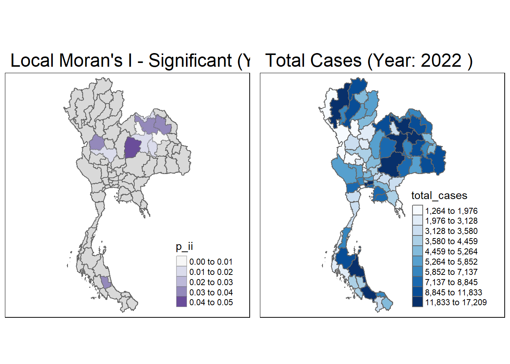

pacman::p_load(sf,st, tidyverse, tmap, knitr, spdep, arrow)Take Home Exercise 2
Application of Geospatial Analysis Methods to Discover Thailand Drug Abuse at the Province Level
1.0 Overview
Drug abuse is associated with significant negative health, financial and social consequences. Yet, illicit drug consumption remains highly prevalent and continues to be a growing problem worldwide. In 2021, 1 in 17 people aged 15–64 in the world had used a drug in the past 12 months. Notwithstanding population growth, the estimated number of drug users grew from 240 million in 2011 to 296 million in 2021.
The geopolitics of Thailand which is near the Golden Triangle of Indochina, the largest drug production site in Asia, and the constant transportation infrastructure development made Thailand became market and transit routes for drug trafficking to the third countries.
In Thailand, drug abuse is one of the major social issue. There are about 2.7 million youths using drugs in Thailand. Among youths aged between 15 and 19 years, there are about 300,000 who have needs for drug treatment. Most of Thai youths involved with drugs are vocational-school students, which nearly doubles in number compared to secondary-school students.
1.1 Study Objectives
We are interested to discover:
if the key indicators of drug abuse of Thailand are independent from space.
If the indicators of drug abuse is indeed spatial dependent, if then, detect where are the clusters and outliers, and the hotspots.
How the observations above evolve over time.
2.0 Importing Packages
We need to import the following packages that are used for this study:
sf: to import, manage and process vector-based geospatial data in R.st: creates simple features from numeric vectors, matrices, or lists, enabling the representation and manipulation of spatial structures in R.tidyverse: a collection of R packages designed for data science, includes packages likedplyrfor data manipulation,ggplot2for data visualizationsfdep: for computing spatial weights, global and local spatial autocorrelation statisticstmap: for creating static and interactive thematic visualisations and maps.knitr: to allow R code to be embedded in R Markdown documents.
3.0 Importing Data
For the purpose of this study, two data sets shall be used, they are:
Thailand Drug Offenses [2017-2022] at Kaggle.
Thailand - Subnational Administrative Boundaries at HDX. We would be using the province boundary data set.
3.1 Importing Geospatial Data
As provinces are administrative level 1, we would be using the tha_admbnda_adm1_rtsd_20220121 shapefile.
In this section, st_read() of sf package will be used to import tha_admbnda_adm1_rtsd_20220121 dataset into R environment.
thai_province <- st_read(dsn = "data/tha_adm_rtsd_itos_20210121_shp", layer = "tha_admbnda_adm1_rtsd_20220121")Reading layer `tha_admbnda_adm1_rtsd_20220121' from data source
`C:\wamp64\www\crediblues\IS415-GAA\Take-Home_Ex\Take-Home_Ex02\data\tha_adm_rtsd_itos_20210121_shp'
using driver `ESRI Shapefile'
Simple feature collection with 77 features and 16 fields
Geometry type: MULTIPOLYGON
Dimension: XY
Bounding box: xmin: 97.34336 ymin: 5.613038 xmax: 105.637 ymax: 20.46507
Geodetic CRS: WGS 84st_crs(thai_province)Coordinate Reference System:
User input: WGS 84
wkt:
GEOGCRS["WGS 84",
DATUM["World Geodetic System 1984",
ELLIPSOID["WGS 84",6378137,298.257223563,
LENGTHUNIT["metre",1]]],
PRIMEM["Greenwich",0,
ANGLEUNIT["degree",0.0174532925199433]],
CS[ellipsoidal,2],
AXIS["latitude",north,
ORDER[1],
ANGLEUNIT["degree",0.0174532925199433]],
AXIS["longitude",east,
ORDER[2],
ANGLEUNIT["degree",0.0174532925199433]],
ID["EPSG",4326]]We shall convert to UTM Zone 47N (EPSG: 32647), which is often used for Thailand.
thai_province <- st_transform(thai_province, crs = 32647)st_crs(thai_province)Coordinate Reference System:
User input: EPSG:32647
wkt:
PROJCRS["WGS 84 / UTM zone 47N",
BASEGEOGCRS["WGS 84",
ENSEMBLE["World Geodetic System 1984 ensemble",
MEMBER["World Geodetic System 1984 (Transit)"],
MEMBER["World Geodetic System 1984 (G730)"],
MEMBER["World Geodetic System 1984 (G873)"],
MEMBER["World Geodetic System 1984 (G1150)"],
MEMBER["World Geodetic System 1984 (G1674)"],
MEMBER["World Geodetic System 1984 (G1762)"],
MEMBER["World Geodetic System 1984 (G2139)"],
ELLIPSOID["WGS 84",6378137,298.257223563,
LENGTHUNIT["metre",1]],
ENSEMBLEACCURACY[2.0]],
PRIMEM["Greenwich",0,
ANGLEUNIT["degree",0.0174532925199433]],
ID["EPSG",4326]],
CONVERSION["UTM zone 47N",
METHOD["Transverse Mercator",
ID["EPSG",9807]],
PARAMETER["Latitude of natural origin",0,
ANGLEUNIT["degree",0.0174532925199433],
ID["EPSG",8801]],
PARAMETER["Longitude of natural origin",99,
ANGLEUNIT["degree",0.0174532925199433],
ID["EPSG",8802]],
PARAMETER["Scale factor at natural origin",0.9996,
SCALEUNIT["unity",1],
ID["EPSG",8805]],
PARAMETER["False easting",500000,
LENGTHUNIT["metre",1],
ID["EPSG",8806]],
PARAMETER["False northing",0,
LENGTHUNIT["metre",1],
ID["EPSG",8807]]],
CS[Cartesian,2],
AXIS["(E)",east,
ORDER[1],
LENGTHUNIT["metre",1]],
AXIS["(N)",north,
ORDER[2],
LENGTHUNIT["metre",1]],
USAGE[
SCOPE["Navigation and medium accuracy spatial referencing."],
AREA["Between 96°E and 102°E, northern hemisphere between equator and 84°N, onshore and offshore. China. Indonesia. Laos. Malaysia - West Malaysia. Mongolia. Myanmar (Burma). Russian Federation. Thailand."],
BBOX[0,96,84,102]],
ID["EPSG",32647]]Let’s take a look at what is in tha_province_admin_boundary:
thai_provinceSimple feature collection with 77 features and 16 fields
Geometry type: MULTIPOLYGON
Dimension: XY
Bounding box: xmin: 325178.8 ymin: 620860.6 xmax: 1213656 ymax: 2263241
Projected CRS: WGS 84 / UTM zone 47N
First 10 features:
Shape_Leng Shape_Area ADM1_EN ADM1_TH ADM1_PCODE
1 2.417227 0.13133873 Bangkok กรุงเทพมหานคร TH10
2 1.695100 0.07926199 Samut Prakan สมุทรปราการ TH11
3 1.251111 0.05323766 Nonthaburi นนทบุรี TH12
4 1.884945 0.12698345 Pathum Thani ปทุมธานี TH13
5 3.041716 0.21393797 Phra Nakhon Si Ayutthaya พระนครศรีอยุธยา TH14
6 1.739908 0.07920961 Ang Thong อ่างทอง TH15
7 5.693342 0.54578838 Lop Buri ลพบุรี TH16
8 1.778326 0.06872655 Sing Buri สิงห์บุรี TH17
9 2.896316 0.20907828 Chai Nat ชัยนาท TH18
10 4.766446 0.29208711 Saraburi สระบุรี TH19
ADM1_REF ADM1ALT1EN ADM1ALT2EN ADM1ALT1TH ADM1ALT2TH ADM0_EN ADM0_TH
1 <NA> <NA> <NA> <NA> <NA> Thailand ประเทศไทย
2 <NA> <NA> <NA> <NA> <NA> Thailand ประเทศไทย
3 <NA> <NA> <NA> <NA> <NA> Thailand ประเทศไทย
4 <NA> <NA> <NA> <NA> <NA> Thailand ประเทศไทย
5 <NA> <NA> <NA> <NA> <NA> Thailand ประเทศไทย
6 <NA> <NA> <NA> <NA> <NA> Thailand ประเทศไทย
7 <NA> <NA> <NA> <NA> <NA> Thailand ประเทศไทย
8 <NA> <NA> <NA> <NA> <NA> Thailand ประเทศไทย
9 <NA> <NA> <NA> <NA> <NA> Thailand ประเทศไทย
10 <NA> <NA> <NA> <NA> <NA> Thailand ประเทศไทย
ADM0_PCODE date validOn validTo geometry
1 TH 2019-02-18 2022-01-22 -001-11-30 MULTIPOLYGON (((674339.8 15...
2 TH 2019-02-18 2022-01-22 -001-11-30 MULTIPOLYGON (((687139.8 15...
3 TH 2019-02-18 2022-01-22 -001-11-30 MULTIPOLYGON (((644817.9 15...
4 TH 2019-02-18 2022-01-22 -001-11-30 MULTIPOLYGON (((704086 1575...
5 TH 2019-02-18 2022-01-22 -001-11-30 MULTIPOLYGON (((662941.6 16...
6 TH 2019-02-18 2022-01-22 -001-11-30 MULTIPOLYGON (((643472.8 16...
7 TH 2019-02-18 2022-01-22 -001-11-30 MULTIPOLYGON (((751293.3 17...
8 TH 2019-02-18 2022-01-22 -001-11-30 MULTIPOLYGON (((647136.1 16...
9 TH 2019-02-18 2022-01-22 -001-11-30 MULTIPOLYGON (((620165.4 17...
10 TH 2019-02-18 2022-01-22 -001-11-30 MULTIPOLYGON (((757935.1 16...tmap_mode("plot")tmap mode set to plottingtm_shape(thai_province)+
tm_fill(col="white")+
tm_borders(col = "black", lwd=0.3, alpha=0.6)+
tm_layout(
main.title = "Provinces in Thailand",
main.title.size = 1,
main.title.position = "center",
legend.show = FALSE,
frame = FALSE)
3.2 Importing Aspatial Data
In this section, read_csv() of sf package will be used to import the csv file into R environment. The output is R dataframe class.
tha_drug_offences <- read_csv("data/thai_drug_offenses_2017_2022.csv")Rows: 7392 Columns: 5
── Column specification ────────────────────────────────────────────────────────
Delimiter: ","
chr (3): types_of_drug_offenses, province_th, province_en
dbl (2): fiscal_year, no_cases
ℹ Use `spec()` to retrieve the full column specification for this data.
ℹ Specify the column types or set `show_col_types = FALSE` to quiet this message.tha_drug_offences# A tibble: 7,392 × 5
fiscal_year types_of_drug_offenses no_cases province_th province_en
<dbl> <chr> <dbl> <chr> <chr>
1 2017 drug_use_cases 11871 กรุงเทพมหานคร Bangkok
2 2017 drug_use_cases 200 ชัยนาท Chai Nat
3 2017 drug_use_cases 553 นนทบุรี Nonthaburi
4 2017 drug_use_cases 450 ปทุมธานี Pathum Thani
5 2017 drug_use_cases 378 พระนครศรีอยุธยา Phra Nakhon Si Ayu…
6 2017 drug_use_cases 727 ลพบุรี Loburi
7 2017 drug_use_cases 820 สมุทรปราการ Samut Prakan
8 2017 drug_use_cases 69 สระบุรี Saraburi
9 2017 drug_use_cases 127 สิงห์บุรี Sing Buri
10 2017 drug_use_cases 208 อ่างทอง Ang Thong
# ℹ 7,382 more rows4.0 Data Wrangling
4.1 Correcting Province Name Mismatch
Let’s check if the names of the provinces in our geospatial and aspatial data match each other
tha_drug_offences_provinces <- unique(tha_drug_offences$province_en)
thai_province_provinces <- unique(thai_province$ADM1_EN)
# Find provinces in drug data that don't match the spatial data
mismatched_drug_provinces <- setdiff(tha_drug_offences_provinces, thai_province_provinces)
# Find provinces in spatial data that don't match the drug data
mismatched_spatial_provinces <- setdiff(thai_province_provinces, tha_drug_offences_provinces)
# Mismatched province names
cat("Provinces in drug data but not in spatial data:\n", mismatched_drug_provinces, "\n")Provinces in drug data but not in spatial data:
Loburi buogkan cat("Provinces in spatial data but not in drug data:\n", mismatched_spatial_provinces, "\n")Provinces in spatial data but not in drug data:
Lop Buri Bueng Kan The provinces for Lop Buri and Bueng Kan are misspelled in tha_drug_offences_provinces .
Let’s rename them.
tha_drug_offences <- tha_drug_offences %>%
mutate(province_en = case_when(
province_en == "Loburi" ~ "Lop Buri",
province_en == "buogkan" ~ "Bueng Kan",
TRUE ~ province_en # Keep other names unchanged
))Checking again for mismatch
tha_drug_offences_provinces <- unique(tha_drug_offences$province_en)
thai_province_provinces <- unique(thai_province$ADM1_EN)
# Find provinces in drug data that don't match the spatial data
mismatched_drug_provinces <- setdiff(tha_drug_offences_provinces, thai_province_provinces)
# Find provinces in spatial data that don't match the drug data
mismatched_spatial_provinces <- setdiff(thai_province_provinces, tha_drug_offences_provinces)
# Mismatched province names
cat("Provinces in drug data but not in spatial data:\n", mismatched_drug_provinces, "\n")Provinces in drug data but not in spatial data:
cat("Provinces in spatial data but not in drug data:\n", mismatched_spatial_provinces, "\n")Provinces in spatial data but not in drug data:
4.2 Drop redundant columns
To reduce the memory load, we can drop columns which are not relevant for this study and store only relevant columns
tha_drug_offences <- subset(tha_drug_offences, select = c(fiscal_year, province_en, no_cases, types_of_drug_offenses))
tha_drug_offences# A tibble: 7,392 × 4
fiscal_year province_en no_cases types_of_drug_offenses
<dbl> <chr> <dbl> <chr>
1 2017 Bangkok 11871 drug_use_cases
2 2017 Chai Nat 200 drug_use_cases
3 2017 Nonthaburi 553 drug_use_cases
4 2017 Pathum Thani 450 drug_use_cases
5 2017 Phra Nakhon Si Ayutthaya 378 drug_use_cases
6 2017 Lop Buri 727 drug_use_cases
7 2017 Samut Prakan 820 drug_use_cases
8 2017 Saraburi 69 drug_use_cases
9 2017 Sing Buri 127 drug_use_cases
10 2017 Ang Thong 208 drug_use_cases
# ℹ 7,382 more rowsthai_province <- subset(thai_province, select = c(Shape_Leng, Shape_Area, ADM1_EN, geometry))
thai_province Simple feature collection with 77 features and 3 fields
Geometry type: MULTIPOLYGON
Dimension: XY
Bounding box: xmin: 325178.8 ymin: 620860.6 xmax: 1213656 ymax: 2263241
Projected CRS: WGS 84 / UTM zone 47N
First 10 features:
Shape_Leng Shape_Area ADM1_EN
1 2.417227 0.13133873 Bangkok
2 1.695100 0.07926199 Samut Prakan
3 1.251111 0.05323766 Nonthaburi
4 1.884945 0.12698345 Pathum Thani
5 3.041716 0.21393797 Phra Nakhon Si Ayutthaya
6 1.739908 0.07920961 Ang Thong
7 5.693342 0.54578838 Lop Buri
8 1.778326 0.06872655 Sing Buri
9 2.896316 0.20907828 Chai Nat
10 4.766446 0.29208711 Saraburi
geometry
1 MULTIPOLYGON (((674339.8 15...
2 MULTIPOLYGON (((687139.8 15...
3 MULTIPOLYGON (((644817.9 15...
4 MULTIPOLYGON (((704086 1575...
5 MULTIPOLYGON (((662941.6 16...
6 MULTIPOLYGON (((643472.8 16...
7 MULTIPOLYGON (((751293.3 17...
8 MULTIPOLYGON (((647136.1 16...
9 MULTIPOLYGON (((620165.4 17...
10 MULTIPOLYGON (((757935.1 16...4.3 Relational Join
Since tha_drug_offences only contains province names without any geometry, we will need to perform a spatial join to associate the drug data with the province boundaries.
The code chunk below will be used to join the attribute tables of thai_province’s SpatialPolygonsDataFrame with the attribute fields of tha_drug_offences dataframe. This is performed by using left_join() of dplyr package.
thai_province <- thai_province %>%
left_join(tha_drug_offences , by = c("ADM1_EN" = "province_en"))
thai_provinceSimple feature collection with 7392 features and 6 fields
Geometry type: MULTIPOLYGON
Dimension: XY
Bounding box: xmin: 325178.8 ymin: 620860.6 xmax: 1213656 ymax: 2263241
Projected CRS: WGS 84 / UTM zone 47N
First 10 features:
Shape_Leng Shape_Area ADM1_EN fiscal_year no_cases
1 2.417227 0.1313387 Bangkok 2017 11871
2 2.417227 0.1313387 Bangkok 2018 16480
3 2.417227 0.1313387 Bangkok 2019 15067
4 2.417227 0.1313387 Bangkok 2020 9724
5 2.417227 0.1313387 Bangkok 2021 9625
6 2.417227 0.1313387 Bangkok 2022 2755
7 2.417227 0.1313387 Bangkok 2017 12371
8 2.417227 0.1313387 Bangkok 2018 17131
9 2.417227 0.1313387 Bangkok 2019 15458
10 2.417227 0.1313387 Bangkok 2020 9754
types_of_drug_offenses geometry
1 drug_use_cases MULTIPOLYGON (((674339.8 15...
2 drug_use_cases MULTIPOLYGON (((674339.8 15...
3 drug_use_cases MULTIPOLYGON (((674339.8 15...
4 drug_use_cases MULTIPOLYGON (((674339.8 15...
5 drug_use_cases MULTIPOLYGON (((674339.8 15...
6 drug_use_cases MULTIPOLYGON (((674339.8 15...
7 suspects_in_drug_use_cases MULTIPOLYGON (((674339.8 15...
8 suspects_in_drug_use_cases MULTIPOLYGON (((674339.8 15...
9 suspects_in_drug_use_cases MULTIPOLYGON (((674339.8 15...
10 suspects_in_drug_use_cases MULTIPOLYGON (((674339.8 15...drug_offense_summary <- thai_province %>%
group_by(ADM1_EN, types_of_drug_offenses) %>%
summarise(total_cases = sum(no_cases, na.rm = TRUE), .groups = 'drop')
drug_offense_summarySimple feature collection with 1232 features and 3 fields
Geometry type: MULTIPOLYGON
Dimension: XY
Bounding box: xmin: 325178.8 ymin: 620860.6 xmax: 1213656 ymax: 2263241
Projected CRS: WGS 84 / UTM zone 47N
# A tibble: 1,232 × 4
ADM1_EN types_of_drug_offenses total_cases geometry
<chr> <chr> <dbl> <MULTIPOLYGON [m]>
1 Amnat Charoen conspiracy_cases 5 (((1137720 1809629, 1137…
2 Amnat Charoen drug_use_cases 11695 (((1137720 1809629, 1137…
3 Amnat Charoen export_cases 0 (((1137720 1809629, 1137…
4 Amnat Charoen import_cases 9 (((1137720 1809629, 1137…
5 Amnat Charoen possession_cases 2127 (((1137720 1809629, 1137…
6 Amnat Charoen possession_with_intent_t… 2298 (((1137720 1809629, 1137…
7 Amnat Charoen production_cases 280 (((1137720 1809629, 1137…
8 Amnat Charoen suspects_in_conspiracy_c… 13 (((1137720 1809629, 1137…
9 Amnat Charoen suspects_in_drug_use_cas… 11829 (((1137720 1809629, 1137…
10 Amnat Charoen suspects_in_export_cases 0 (((1137720 1809629, 1137…
# ℹ 1,222 more rowsSince we are concerned about drug use cases, let’s filter our data for specific indicators only. We would be using these 5 indicators for our analysis.
drug_use_cases
possession_cases
possession_with_intent_to_distribute_cases
production_cases
trafficking_cases
drug_abuse_indicators_summary <- thai_province %>%
filter(types_of_drug_offenses %in% c("drug_use_cases",
"possession_cases",
"possession_with_intent_to_distribute_cases",
"production_cases",
"trafficking_cases")) %>%
group_by(ADM1_EN, fiscal_year, types_of_drug_offenses) %>%
summarise(total_cases = sum(no_cases, na.rm = TRUE), .groups = 'drop')
# View the drug abuse indicators layer
drug_abuse_indicators_summarySimple feature collection with 2310 features and 4 fields
Geometry type: MULTIPOLYGON
Dimension: XY
Bounding box: xmin: 325178.8 ymin: 620860.6 xmax: 1213656 ymax: 2263241
Projected CRS: WGS 84 / UTM zone 47N
# A tibble: 2,310 × 5
ADM1_EN fiscal_year types_of_drug_offenses total_cases
<chr> <dbl> <chr> <dbl>
1 Amnat Charoen 2017 drug_use_cases 1734
2 Amnat Charoen 2017 possession_cases 293
3 Amnat Charoen 2017 possession_with_intent_to_distribute_c… 241
4 Amnat Charoen 2017 production_cases 14
5 Amnat Charoen 2017 trafficking_cases 211
6 Amnat Charoen 2018 drug_use_cases 2038
7 Amnat Charoen 2018 possession_cases 307
8 Amnat Charoen 2018 possession_with_intent_to_distribute_c… 269
9 Amnat Charoen 2018 production_cases 11
10 Amnat Charoen 2018 trafficking_cases 143
# ℹ 2,300 more rows
# ℹ 1 more variable: geometry <MULTIPOLYGON [m]># Get unique fiscal years
years <- unique(drug_abuse_indicators_summary$fiscal_year)
# Loop through each year to create and save individual plots
for (year in years) {
# Filter data for the current year
year_data <- drug_abuse_indicators_summary %>%
filter(fiscal_year == year)
# Create the plot
p <- ggplot(year_data, aes(x = ADM1_EN, y = total_cases, fill = types_of_drug_offenses)) +
geom_col(position = position_dodge(width = 0.9), width = 0.7) + # Create bars for total cases
labs(title = paste("Distribution of Drug Abuse Indicators in", year),
x = "Province",
y = "Total Cases",
fill = "Type of Drug Offense") +
theme_minimal() + # Use a minimal theme
theme(axis.text.x = element_text(angle = 90, hjust = 1, size = 4), # Rotate x-axis labels for readability
legend.position = "right",
legend.text = element_text(size = 4)) +
scale_fill_brewer(palette = "Set3") # Optional: Set a color palette for better visibility
# Print the plot
print(p)
}


4.4 Visualising Type of Drug offences
Let’s visualise the distribution of total drug cases from our indicators by using qtm() of tmap package, via equal and quantile classification styles.
drug_offense_summary_all_cases <- thai_province %>%
group_by(ADM1_EN, fiscal_year) %>%
summarise(total_cases = sum(no_cases, na.rm = TRUE),
geometry = first(geometry), .groups = 'drop')
# View the summarized data
print(drug_offense_summary_all_cases)Simple feature collection with 462 features and 3 fields
Geometry type: MULTIPOLYGON
Dimension: XY
Bounding box: xmin: 325178.8 ymin: 620860.6 xmax: 1213656 ymax: 2263241
Projected CRS: WGS 84 / UTM zone 47N
# A tibble: 462 × 4
ADM1_EN fiscal_year total_cases geometry
<chr> <dbl> <dbl> <MULTIPOLYGON [m]>
1 Amnat Charoen 2017 5076 (((1137720 1809629, 1137724 1809622, 1…
2 Amnat Charoen 2018 5651 (((1137720 1809629, 1137724 1809622, 1…
3 Amnat Charoen 2019 7339 (((1137720 1809629, 1137724 1809622, 1…
4 Amnat Charoen 2020 3949 (((1137720 1809629, 1137724 1809622, 1…
5 Amnat Charoen 2021 8961 (((1137720 1809629, 1137724 1809622, 1…
6 Amnat Charoen 2022 4459 (((1137720 1809629, 1137724 1809622, 1…
7 Ang Thong 2017 1614 (((643472.8 1636469, 643496 1636423, 6…
8 Ang Thong 2018 2717 (((643472.8 1636469, 643496 1636423, 6…
9 Ang Thong 2019 2781 (((643472.8 1636469, 643496 1636423, 6…
10 Ang Thong 2020 2636 (((643472.8 1636469, 643496 1636423, 6…
# ℹ 452 more rowstmap_mode('plot')tmap mode set to plotting# Get unique fiscal years
years <- unique(drug_offense_summary_all_cases$fiscal_year)
# Loop through each year to create and display maps
for (year in years) {
# Filter data for the current year
year_data <- drug_offense_summary_all_cases[drug_offense_summary_all_cases$fiscal_year == year, ]
# Create a map with equal interval classification
equal <- tm_shape(year_data) +
tm_fill("total_cases",
n = 5,
style = "equal",
title = "Total Drug Use Cases") +
tm_borders(alpha = 0.5) +
tm_layout(main.title = paste("Equal Interval -", year), title.size = 0.5)
# Create a map with quantile classification
quantile <- tm_shape(year_data) +
tm_fill("total_cases",
n = 5,
style = "quantile",
title = "Total Drug Use Cases") +
tm_borders(alpha = 0.5) +
tm_layout(main.title = paste("Quantile -", year), title.size = 0.5)
# Arrange the two maps side by side
tmap_arranged <- tmap_arrange(equal, quantile, asp = 1, ncol = 2)
# Print the arranged map
print(tmap_arranged)
}


5.0 Global Measures of Spatial Autocorrelation
In this section, we would be computing global spatial autocorrelation statistics and to perform spatial complete randomness test for global spatial autocorrelation.
5.1 Computing Contiguity Spatial Weights
Before we can compute the global spatial autocorrelation statistics, we need to construct a spatial weights of the study area. The spatial weights is used to define the neighbourhood relationships between the geographical units (i.e. province) in the study area.
In the code chunk below, poly2nb() of spdep package is used to compute contiguity weight matrices for the study area. This function builds a neighbours list based on regions with contiguous boundaries.
The code chunk below is used to compute Queen contiguity weight matrix.
# Create an empty list to store results for each year
yearly_nb_data <- list()
# Loop through each fiscal year
for (year in unique(drug_offense_summary_all_cases$fiscal_year)) {
# Subset data for the current year
yearly_data <- drug_offense_summary_all_cases %>%
filter(fiscal_year == year)
# Create neighbors list using poly2nb for the current year's data
wm_q <- poly2nb(as(yearly_data, "Spatial"), queen=TRUE)
# Store the result
yearly_nb_data[[as.character(year)]] <- wm_q
# Print summary for each year
print(paste("Summary for year", year))
print(summary(wm_q))
}Warning in poly2nb(as(yearly_data, "Spatial"), queen = TRUE): some observations have no neighbours;
if this seems unexpected, try increasing the snap argument.Warning in poly2nb(as(yearly_data, "Spatial"), queen = TRUE): neighbour object has 2 sub-graphs;
if this sub-graph count seems unexpected, try increasing the snap argument.[1] "Summary for year 2017"
Neighbour list object:
Number of regions: 77
Number of nonzero links: 352
Percentage nonzero weights: 5.93692
Average number of links: 4.571429
1 region with no links:
48
2 disjoint connected subgraphs
Link number distribution:
0 1 2 3 4 5 6 7 8 9
1 1 5 17 15 17 10 5 4 2
1 least connected region:
71 with 1 link
2 most connected regions:
17 69 with 9 linksWarning in poly2nb(as(yearly_data, "Spatial"), queen = TRUE): some observations have no neighbours;
if this seems unexpected, try increasing the snap argument.
Warning in poly2nb(as(yearly_data, "Spatial"), queen = TRUE): neighbour object has 2 sub-graphs;
if this sub-graph count seems unexpected, try increasing the snap argument.[1] "Summary for year 2018"
Neighbour list object:
Number of regions: 77
Number of nonzero links: 352
Percentage nonzero weights: 5.93692
Average number of links: 4.571429
1 region with no links:
48
2 disjoint connected subgraphs
Link number distribution:
0 1 2 3 4 5 6 7 8 9
1 1 5 17 15 17 10 5 4 2
1 least connected region:
71 with 1 link
2 most connected regions:
17 69 with 9 linksWarning in poly2nb(as(yearly_data, "Spatial"), queen = TRUE): some observations have no neighbours;
if this seems unexpected, try increasing the snap argument.
Warning in poly2nb(as(yearly_data, "Spatial"), queen = TRUE): neighbour object has 2 sub-graphs;
if this sub-graph count seems unexpected, try increasing the snap argument.[1] "Summary for year 2019"
Neighbour list object:
Number of regions: 77
Number of nonzero links: 352
Percentage nonzero weights: 5.93692
Average number of links: 4.571429
1 region with no links:
48
2 disjoint connected subgraphs
Link number distribution:
0 1 2 3 4 5 6 7 8 9
1 1 5 17 15 17 10 5 4 2
1 least connected region:
71 with 1 link
2 most connected regions:
17 69 with 9 linksWarning in poly2nb(as(yearly_data, "Spatial"), queen = TRUE): some observations have no neighbours;
if this seems unexpected, try increasing the snap argument.
Warning in poly2nb(as(yearly_data, "Spatial"), queen = TRUE): neighbour object has 2 sub-graphs;
if this sub-graph count seems unexpected, try increasing the snap argument.[1] "Summary for year 2020"
Neighbour list object:
Number of regions: 77
Number of nonzero links: 352
Percentage nonzero weights: 5.93692
Average number of links: 4.571429
1 region with no links:
48
2 disjoint connected subgraphs
Link number distribution:
0 1 2 3 4 5 6 7 8 9
1 1 5 17 15 17 10 5 4 2
1 least connected region:
71 with 1 link
2 most connected regions:
17 69 with 9 linksWarning in poly2nb(as(yearly_data, "Spatial"), queen = TRUE): some observations have no neighbours;
if this seems unexpected, try increasing the snap argument.
Warning in poly2nb(as(yearly_data, "Spatial"), queen = TRUE): neighbour object has 2 sub-graphs;
if this sub-graph count seems unexpected, try increasing the snap argument.[1] "Summary for year 2021"
Neighbour list object:
Number of regions: 77
Number of nonzero links: 352
Percentage nonzero weights: 5.93692
Average number of links: 4.571429
1 region with no links:
48
2 disjoint connected subgraphs
Link number distribution:
0 1 2 3 4 5 6 7 8 9
1 1 5 17 15 17 10 5 4 2
1 least connected region:
71 with 1 link
2 most connected regions:
17 69 with 9 linksWarning in poly2nb(as(yearly_data, "Spatial"), queen = TRUE): some observations have no neighbours;
if this seems unexpected, try increasing the snap argument.
Warning in poly2nb(as(yearly_data, "Spatial"), queen = TRUE): neighbour object has 2 sub-graphs;
if this sub-graph count seems unexpected, try increasing the snap argument.[1] "Summary for year 2022"
Neighbour list object:
Number of regions: 77
Number of nonzero links: 352
Percentage nonzero weights: 5.93692
Average number of links: 4.571429
1 region with no links:
48
2 disjoint connected subgraphs
Link number distribution:
0 1 2 3 4 5 6 7 8 9
1 1 5 17 15 17 10 5 4 2
1 least connected region:
71 with 1 link
2 most connected regions:
17 69 with 9 linksSeems like there is a region which has no links. Let’s find out the region.
# Check if the neighbor list is connected
components <- n.comp.nb(yearly_nb_data[['2017']])
components$comp.id # Component ID of each region [1] 1 1 1 1 1 1 1 1 1 1 1 1 1 1 1 1 1 1 1 1 1 1 1 1 1 1 1 1 1 1 1 1 1 1 1 1 1 1
[39] 1 1 1 1 1 1 1 1 1 2 1 1 1 1 1 1 1 1 1 1 1 1 1 1 1 1 1 1 1 1 1 1 1 1 1 1 1 1
[77] 1# After running your loop, check yearly_nb_data
for (year in names(yearly_nb_data)) {
wm_q <- yearly_nb_data[[year]]
# Find indices of regions with no neighbors
no_link_indices <- which(card(wm_q) == 0)
# If there are regions with no links, get their names
if (length(no_link_indices) > 0) {
cat("Regions with no links for year", year, ":\n")
# Get region names from the original dataset
for (index in no_link_indices) {
region_name <- yearly_data$ADM1_EN[index] # Adjust based on your original dataframe structure
cat(region_name, "\n") # Print region names
}
} else {
cat("All regions have links for year", year, "\n")
}
}Regions with no links for year 2017 :
Phuket
Regions with no links for year 2018 :
Phuket
Regions with no links for year 2019 :
Phuket
Regions with no links for year 2020 :
Phuket
Regions with no links for year 2021 :
Phuket
Regions with no links for year 2022 :
Phuket Phuket is the disconnected province, which makes sense geographically, as Phuket is an island province in Thailand, which could lead to its being classified as a separate component in spatial neighbor analysis and it being isolated when using the poly2nb() function
yearly_listw_data <- list()
# Loop through each year in the yearly_nb_data list
for (year in names(yearly_nb_data)) {
# Get the neighbors list for the current year
wm_q <- yearly_nb_data[[year]]
# Convert neighbors list to a listw object
rswm_q <- nb2listw(wm_q, style = "W", zero.policy = TRUE)
# Store the result in the new list
yearly_listw_data[[year]] <- rswm_q
# Print the result for each year if needed
print(paste("Weight object for year", year))
print(rswm_q)
}[1] "Weight object for year 2017"
Characteristics of weights list object:
Neighbour list object:
Number of regions: 77
Number of nonzero links: 352
Percentage nonzero weights: 5.93692
Average number of links: 4.571429
1 region with no links:
48
2 disjoint connected subgraphs
Weights style: W
Weights constants summary:
n nn S0 S1 S2
W 76 5776 76 36.26113 315.652
[1] "Weight object for year 2018"
Characteristics of weights list object:
Neighbour list object:
Number of regions: 77
Number of nonzero links: 352
Percentage nonzero weights: 5.93692
Average number of links: 4.571429
1 region with no links:
48
2 disjoint connected subgraphs
Weights style: W
Weights constants summary:
n nn S0 S1 S2
W 76 5776 76 36.26113 315.652
[1] "Weight object for year 2019"
Characteristics of weights list object:
Neighbour list object:
Number of regions: 77
Number of nonzero links: 352
Percentage nonzero weights: 5.93692
Average number of links: 4.571429
1 region with no links:
48
2 disjoint connected subgraphs
Weights style: W
Weights constants summary:
n nn S0 S1 S2
W 76 5776 76 36.26113 315.652
[1] "Weight object for year 2020"
Characteristics of weights list object:
Neighbour list object:
Number of regions: 77
Number of nonzero links: 352
Percentage nonzero weights: 5.93692
Average number of links: 4.571429
1 region with no links:
48
2 disjoint connected subgraphs
Weights style: W
Weights constants summary:
n nn S0 S1 S2
W 76 5776 76 36.26113 315.652
[1] "Weight object for year 2021"
Characteristics of weights list object:
Neighbour list object:
Number of regions: 77
Number of nonzero links: 352
Percentage nonzero weights: 5.93692
Average number of links: 4.571429
1 region with no links:
48
2 disjoint connected subgraphs
Weights style: W
Weights constants summary:
n nn S0 S1 S2
W 76 5776 76 36.26113 315.652
[1] "Weight object for year 2022"
Characteristics of weights list object:
Neighbour list object:
Number of regions: 77
Number of nonzero links: 352
Percentage nonzero weights: 5.93692
Average number of links: 4.571429
1 region with no links:
48
2 disjoint connected subgraphs
Weights style: W
Weights constants summary:
n nn S0 S1 S2
W 76 5776 76 36.26113 315.6525.2 Global Measures of Spatial Autocorrelation: Moran’s I
# Create an empty list to store Moran's I results for each year
moran_results <- list()
# Loop through each year in the yearly_listw_data list
for (year in names(yearly_listw_data)) {
# Get the corresponding weight object for the current year
rswm_q <- yearly_listw_data[[year]]
# Subset the GDPPC data for the current year
yearly_data <- drug_offense_summary_all_cases %>%
filter(fiscal_year == year)
# Run the Moran's I test
moran_test_result <- moran.test(yearly_data$total_cases,
listw = rswm_q,
zero.policy = TRUE,
na.action = na.omit)
# Store the result in the moran_results list
moran_results[[year]] <- moran_test_result
# Print the result for each year if needed
print(paste("Moran's I test result for year", year))
print(moran_test_result)
}[1] "Moran's I test result for year 2017"
Moran I test under randomisation
data: yearly_data$total_cases
weights: rswm_q
n reduced by no-neighbour observations
Moran I statistic standard deviate = 2.4598, p-value = 0.006951
alternative hypothesis: greater
sample estimates:
Moran I statistic Expectation Variance
0.133140650 -0.013333333 0.003545946
[1] "Moran's I test result for year 2018"
Moran I test under randomisation
data: yearly_data$total_cases
weights: rswm_q
n reduced by no-neighbour observations
Moran I statistic standard deviate = 2.1529, p-value = 0.01566
alternative hypothesis: greater
sample estimates:
Moran I statistic Expectation Variance
0.116368909 -0.013333333 0.003629353
[1] "Moran's I test result for year 2019"
Moran I test under randomisation
data: yearly_data$total_cases
weights: rswm_q
n reduced by no-neighbour observations
Moran I statistic standard deviate = 2.4911, p-value = 0.006367
alternative hypothesis: greater
sample estimates:
Moran I statistic Expectation Variance
0.155405262 -0.013333333 0.004588259
[1] "Moran's I test result for year 2020"
Moran I test under randomisation
data: yearly_data$total_cases
weights: rswm_q
n reduced by no-neighbour observations
Moran I statistic standard deviate = 1.9969, p-value = 0.02292
alternative hypothesis: greater
sample estimates:
Moran I statistic Expectation Variance
0.129597584 -0.013333333 0.005123377
[1] "Moran's I test result for year 2021"
Moran I test under randomisation
data: yearly_data$total_cases
weights: rswm_q
n reduced by no-neighbour observations
Moran I statistic standard deviate = 2.8146, p-value = 0.002442
alternative hypothesis: greater
sample estimates:
Moran I statistic Expectation Variance
0.198888805 -0.013333333 0.005685208
[1] "Moran's I test result for year 2022"
Moran I test under randomisation
data: yearly_data$total_cases
weights: rswm_q
n reduced by no-neighbour observations
Moran I statistic standard deviate = 2.7999, p-value = 0.002556
alternative hypothesis: greater
sample estimates:
Moran I statistic Expectation Variance
0.20112705 -0.01333333 0.00586698 Positive Moran’s I values indicate a tendency for similar values (in this case, total_cases) to cluster in space, suggesting spatial autocorrelation. Significant p-values (typically less than 0.05) indicate that the observed spatial autocorrelation is statistically significant. All years showed significant results, suggesting consistent clustering of drug offense cases over the years analyzed. ### 5.2.1 Computing and Visualising Monte Carlo Moran’s I The code chunk below performs permutation test for Moran’s I statistic by using moran.mc() of spdep. A total of 1000 simulation will be performed.
The distribution of the statistical values as a histogram is also plotted by using the code chunk below.
hist() and abline() of R Graphics are used.
set.seed(1234)
# Create an empty list to store Moran's I results for each year
yearly_moran_mc_results <- list()
# Loop through each year in the yearly_listw_data list
for (year in names(yearly_listw_data)) {
# Get the corresponding weight object for the current year
rswm_q <- yearly_listw_data[[year]]
# Subset the data for the current year
yearly_data <- drug_offense_summary_all_cases %>%
filter(fiscal_year == year)
# Run the Monte Carlo Moran's I test
moranmc_test_result <- moran.mc(yearly_data$total_cases, listw = rswm_q, nsim = 999, zero.policy = TRUE, na.action = na.omit)
# Store the result in the list
yearly_moran_mc_results[[year]] <- moranmc_test_result
# Print the result for each year
print(paste("Moran's I test result for year", year))
print(moranmc_test_result)
# Access the simulated values (Monte Carlo simulations)
sim_results <- moranmc_test_result$res
# Display summary statistics of the simulations
cat("Summary of Monte Carlo simulations for year", year, ":\n")
print(summary(sim_results))
# Plot histogram of the simulated Moran's I values
hist(sim_results, freq = TRUE, breaks = 20, xlab = "Simulated Moran's I", main = paste("Histogram of Simulated Moran's I for", year))
# Add a red vertical line for observed Moran's I
abline(v = moranmc_test_result$statistic, col = "red")
}[1] "Moran's I test result for year 2017"
Monte-Carlo simulation of Moran I
data: yearly_data$total_cases
weights: rswm_q
number of simulations + 1: 1000
statistic = 0.13314, observed rank = 985, p-value = 0.015
alternative hypothesis: greater
Summary of Monte Carlo simulations for year 2017 :
Min. 1st Qu. Median Mean 3rd Qu. Max.
-0.17292 -0.05654 -0.02237 -0.01335 0.02272 0.24096 [1] "Moran's I test result for year 2018"
Monte-Carlo simulation of Moran I
data: yearly_data$total_cases
weights: rswm_q
number of simulations + 1: 1000
statistic = 0.11637, observed rank = 971, p-value = 0.029
alternative hypothesis: greater
Summary of Monte Carlo simulations for year 2018 :
Min. 1st Qu. Median Mean 3rd Qu. Max.
-0.16344 -0.05374 -0.01774 -0.01221 0.02035 0.20400 [1] "Moran's I test result for year 2019"
Monte-Carlo simulation of Moran I
data: yearly_data$total_cases
weights: rswm_q
number of simulations + 1: 1000
statistic = 0.15541, observed rank = 981, p-value = 0.019
alternative hypothesis: greater
Summary of Monte Carlo simulations for year 2019 :
Min. 1st Qu. Median Mean 3rd Qu. Max.
-0.174191 -0.057523 -0.015853 -0.009667 0.030913 0.262306 [1] "Moran's I test result for year 2020"
Monte-Carlo simulation of Moran I
data: yearly_data$total_cases
weights: rswm_q
number of simulations + 1: 1000
statistic = 0.1296, observed rank = 971, p-value = 0.029
alternative hypothesis: greater
Summary of Monte Carlo simulations for year 2020 :
Min. 1st Qu. Median Mean 3rd Qu. Max.
-0.19732 -0.06676 -0.02146 -0.01631 0.02624 0.40270 
[1] "Moran's I test result for year 2021"
Monte-Carlo simulation of Moran I
data: yearly_data$total_cases
weights: rswm_q
number of simulations + 1: 1000
statistic = 0.19889, observed rank = 995, p-value = 0.005
alternative hypothesis: greater
Summary of Monte Carlo simulations for year 2021 :
Min. 1st Qu. Median Mean 3rd Qu. Max.
-0.24142 -0.06727 -0.01829 -0.01499 0.02908 0.24014 
[1] "Moran's I test result for year 2022"
Monte-Carlo simulation of Moran I
data: yearly_data$total_cases
weights: rswm_q
number of simulations + 1: 1000
statistic = 0.20113, observed rank = 996, p-value = 0.004
alternative hypothesis: greater
Summary of Monte Carlo simulations for year 2022 :
Min. 1st Qu. Median Mean 3rd Qu. Max.
-0.21823 -0.06399 -0.01710 -0.01178 0.03867 0.30736 Given that the p-value is much smaller than common significance levels (e.g., 0.05 or 0.01), we reject the null hypothesis of no spatial autocorrelation. This means that there is statistically significant evidence to suggest that the total_cases variable is spatially correlated in the regions analyzed.
The positive Moran’s I statistic indicates that areas with higher counts of total cases are likely to be located near each other, suggesting a clustering effect. This can imply that factors leading to higher cases are spatially concentrated in certain regions.
The consistency of the Moran’s I statistic, standard deviate, and p-value across all years from 2017 to 2022 indicates that the spatial autocorrelation of total_cases has persisted over time. This could point to ongoing or systematic issues related to drug offenses in specific areas.
5.3 Global Measures of Spatial Autocorrelation: Geary’s C
In this section, we would be computing Geary’s C statistics testing by using appropriate functions of spdep package.
5.3.1 Geary’s C test
The code chunk below performs Geary’s C test for spatial autocorrelation by using geary.test() of spdep.
yearly_geary_results <- list()
# Loop through each year in the yearly_listw_data list
for (year in names(yearly_listw_data)) {
# Get the corresponding weight object for the current year
rswm_q <- yearly_listw_data[[year]]
# Subset the total_cases data for the current year
yearly_data <- drug_offense_summary_all_cases %>%
filter(fiscal_year == year)
# Run the Geary's C test
geary_test_result <- geary.test(yearly_data$total_cases, listw = rswm_q, zero.policy = TRUE, na.action = na.omit)
# Store the result in the geary_results list
yearly_geary_results[[year]] <- geary_test_result
# Print the result for each year if needed
print(paste("Geary's C test result for year", year))
print(geary_test_result)
}[1] "Geary's C test result for year 2017"
Geary C test under randomisation
data: yearly_data$total_cases
weights: rswm_q
n reduced by no-neighbour observations
Geary C statistic standard deviate = 0.058508, p-value = 0.4767
alternative hypothesis: Expectation greater than statistic
sample estimates:
Geary C statistic Expectation Variance
0.99195695 1.00000000 0.01889807
[1] "Geary's C test result for year 2018"
Geary C test under randomisation
data: yearly_data$total_cases
weights: rswm_q
n reduced by no-neighbour observations
Geary C statistic standard deviate = -0.010232, p-value = 0.5041
alternative hypothesis: Expectation greater than statistic
sample estimates:
Geary C statistic Expectation Variance
1.00139028 1.00000000 0.01846379
[1] "Geary's C test result for year 2019"
Geary C test under randomisation
data: yearly_data$total_cases
weights: rswm_q
n reduced by no-neighbour observations
Geary C statistic standard deviate = 0.60322, p-value = 0.2732
alternative hypothesis: Expectation greater than statistic
sample estimates:
Geary C statistic Expectation Variance
0.92998745 1.00000000 0.01347099
[1] "Geary's C test result for year 2020"
Geary C test under randomisation
data: yearly_data$total_cases
weights: rswm_q
n reduced by no-neighbour observations
Geary C statistic standard deviate = 0.51845, p-value = 0.3021
alternative hypothesis: Expectation greater than statistic
sample estimates:
Geary C statistic Expectation Variance
0.94640945 1.00000000 0.01068475
[1] "Geary's C test result for year 2021"
Geary C test under randomisation
data: yearly_data$total_cases
weights: rswm_q
n reduced by no-neighbour observations
Geary C statistic standard deviate = 1.5384, p-value = 0.06197
alternative hypothesis: Expectation greater than statistic
sample estimates:
Geary C statistic Expectation Variance
0.864483164 1.000000000 0.007759433
[1] "Geary's C test result for year 2022"
Geary C test under randomisation
data: yearly_data$total_cases
weights: rswm_q
n reduced by no-neighbour observations
Geary C statistic standard deviate = 1.8518, p-value = 0.03203
alternative hypothesis: Expectation greater than statistic
sample estimates:
Geary C statistic Expectation Variance
0.847151443 1.000000000 0.006812988 General Interpretation of Geary’s C: Geary’s C statistic values close to 1 suggest no spatial autocorrelation (randomness in spatial data). Values less than 1 indicate positive spatial autocorrelation (neighboring areas have similar values), meaning that nearby regions tend to have similar drug offense totals. Values greater than 1 suggest negative spatial autocorrelation (neighboring areas have dissimilar values), meaning that nearby regions tend to have different drug offense totals.
Breakdown of Results: 2017: Geary’s C = 0.99196, p-value = 0.4767 The Geary’s C value is close to 1, suggesting little to no spatial autocorrelation. The p-value indicates that there is no statistically significant spatial autocorrelation in drug offense totals for this year.
2018: Geary’s C = 1.00139, p-value = 0.5041 The Geary’s C value is slightly above 1, but still very close to 1, suggesting no significant spatial autocorrelation. The p-value is not significant.
2019: Geary’s C = 0.92999, p-value = 0.2732 The Geary’s C value is less than 1, indicating a weak positive spatial autocorrelation (regions with similar drug offense totals are more likely to be adjacent). However, the p-value indicates that this effect is not statistically significant.
2020: Geary’s C = 0.94641, p-value = 0.3021 Similar to 2019, the Geary’s C statistic is less than 1, suggesting weak positive spatial autocorrelation, but again the p-value is not statistically significant.
2021: Geary’s C = 0.86448, p-value = 0.06197 The Geary’s C value is lower than 1, suggesting stronger positive spatial autocorrelation compared to previous years. The p-value (0.06197) is approaching significance at the 0.05 level, indicating a possible spatial pattern in drug offenses.
2022: Geary’s C = 0.84715, p-value = 0.03203 The Geary’s C value is notably less than 1, indicating stronger positive spatial autocorrelation for this year. The p-value (0.03203) is statistically significant, meaning that for 2022, there is significant evidence of spatial clustering in drug offense totals.
No strong spatial autocorrelation is found for most years, except for 2021 and 2022, where the data suggests positive spatial autocorrelation (regions with similar drug offense totals are likely to be near each other). The spatial pattern is particularly significant in 2022, where the p-value indicates that neighboring regions are likely to have similar drug offense totals, showing statistically significant spatial clustering. 2021 also shows potential clustering, with a p-value close to 0.05, suggesting a trend towards spatial autocorrelation.
5.3.2 Computing Monte Carlo Geary’s C
set.seed(1234)
yearly_geary_mc_results <- list()
for (year in names(yearly_listw_data)) {
rswm_q <- yearly_listw_data[[year]]
yearly_data <- drug_offense_summary_all_cases %>%
filter(fiscal_year == year)
geary_mc_test_result <- geary.mc(yearly_data$total_cases,
listw = rswm_q,
nsim = 999,
zero.policy = TRUE,
na.action = na.omit)
yearly_geary_mc_results[[year]] <- geary_mc_test_result
print(paste("Geary's C Monte Carlo test result for year", year))
print(geary_mc_test_result)
}[1] "Geary's C Monte Carlo test result for year 2017"
Monte-Carlo simulation of Geary C
data: yearly_data$total_cases
weights: rswm_q
number of simulations + 1: 1000
statistic = 0.99196, observed rank = 536, p-value = 0.536
alternative hypothesis: greater
[1] "Geary's C Monte Carlo test result for year 2018"
Monte-Carlo simulation of Geary C
data: yearly_data$total_cases
weights: rswm_q
number of simulations + 1: 1000
statistic = 1.0014, observed rank = 568, p-value = 0.568
alternative hypothesis: greater
[1] "Geary's C Monte Carlo test result for year 2019"
Monte-Carlo simulation of Geary C
data: yearly_data$total_cases
weights: rswm_q
number of simulations + 1: 1000
statistic = 0.92999, observed rank = 339, p-value = 0.339
alternative hypothesis: greater
[1] "Geary's C Monte Carlo test result for year 2020"
Monte-Carlo simulation of Geary C
data: yearly_data$total_cases
weights: rswm_q
number of simulations + 1: 1000
statistic = 0.94641, observed rank = 330, p-value = 0.33
alternative hypothesis: greater
[1] "Geary's C Monte Carlo test result for year 2021"
Monte-Carlo simulation of Geary C
data: yearly_data$total_cases
weights: rswm_q
number of simulations + 1: 1000
statistic = 0.86448, observed rank = 102, p-value = 0.102
alternative hypothesis: greater
[1] "Geary's C Monte Carlo test result for year 2022"
Monte-Carlo simulation of Geary C
data: yearly_data$total_cases
weights: rswm_q
number of simulations + 1: 1000
statistic = 0.84715, observed rank = 52, p-value = 0.052
alternative hypothesis: greaterFor years 2017, 2018, 2019, and 2020: - High p-values (>0.05) indicate that there is no significant evidence to reject the null hypothesis, suggesting that there is no significant spatial clustering of total cases.
For year 2021: - A p-value of 0.102 is approaching significance, indicating some evidence of spatial clustering but not strong enough to conclude. Year 2022: The p-value of 0.052 is very close to the significance threshold (0.05), indicating a potential trend toward spatial clustering of total cases, warranting further investigation.
set.seed(1234)
# Loop through each year in the yearly_geary_mc_results list
for (year in names(yearly_geary_mc_results)) {
bperm <- yearly_geary_mc_results[[year]]
# Calculate mean and variance of simulated values
mean_value <- mean(bperm$res[1:999])
var_value <- var(bperm$res[1:999])
# Print summary statistics
summary_stats <- summary(bperm$res[1:999])
print(paste("Summary statistics for year", year))
print(summary_stats)
# Create histogram
hist(bperm$res,
freq=TRUE,
breaks=20,
xlab="Simulated Geary's C",
main=paste("Geary's C Monte Carlo Simulation -", year))
# Add a vertical line at 1
abline(v=1, col="red")
}[1] "Summary statistics for year 2017"
Min. 1st Qu. Median Mean 3rd Qu. Max.
0.3236 0.9003 0.9820 0.9866 1.0698 1.4819 [1] "Summary statistics for year 2018"
Min. 1st Qu. Median Mean 3rd Qu. Max.
0.3034 0.8989 0.9775 0.9883 1.0811 1.4229 [1] "Summary statistics for year 2019"
Min. 1st Qu. Median Mean 3rd Qu. Max.
0.4352 0.9037 0.9797 0.9839 1.0666 1.4236 
[1] "Summary statistics for year 2020"
Min. 1st Qu. Median Mean 3rd Qu. Max.
0.5151 0.9213 0.9929 0.9913 1.0631 1.3717 
[1] "Summary statistics for year 2021"
Min. 1st Qu. Median Mean 3rd Qu. Max.
0.7094 0.9321 0.9882 0.9871 1.0463 1.3191 [1] "Summary statistics for year 2022"
Min. 1st Qu. Median Mean 3rd Qu. Max.
0.6146 0.9328 0.9915 0.9892 1.0471 1.2546 
6.0 Local Measures of Spatial Autocorrelation
6.1 Computing local Moran’s I
localMI_results <- list()
set.seed(1234)
for (year in names(yearly_listw_data)) {
rswm_q <- yearly_listw_data[[year]]
yearly_data <- drug_offense_summary_all_cases %>%
filter(fiscal_year == year)
fips <- order(yearly_data$ADM1_EN)
localMI <- localmoran(yearly_data$total_cases, rswm_q)
localMI_results[[year]] <- localMI
print(paste('Local Moran I for year', year))
print(head(localMI))
}[1] "Local Moran I for year 2017"
Ii E.Ii Var.Ii Z.Ii Pr(z != E(Ii))
1 -0.026361611 -0.0009317183 0.023254707 -0.16675892 0.86755974
2 0.208087983 -0.0068611433 0.125923977 0.60573333 0.54469185
3 0.901203631 -0.6405512731 2.757827513 0.92839285 0.35320382
4 0.119391410 -0.0017696720 0.044132101 0.57674766 0.56410993
5 0.004852915 -0.0009456055 0.013772632 0.04940931 0.96059311
6 0.292742859 -0.0011268811 0.009822834 2.96508027 0.00302604
[1] "Local Moran I for year 2018"
Ii E.Ii Var.Ii Z.Ii Pr(z != E(Ii))
1 -0.056975570 -1.809315e-03 4.511894e-02 -0.2597132 0.795084986
2 0.159053743 -6.492253e-03 1.191979e-01 0.4794953 0.631586316
3 1.001992337 -6.312584e-01 2.788082e+00 0.9781380 0.328006100
4 0.246720256 -3.565797e-03 8.876388e-02 0.8400758 0.400865860
5 -0.002887184 -4.191217e-06 6.110210e-05 -0.3688209 0.712261211
6 -0.029290910 -1.024708e-05 8.942192e-05 -3.0964133 0.001958772
[1] "Local Moran I for year 2019"
Ii E.Ii Var.Ii Z.Ii Pr(z != E(Ii))
1 -0.09682786 -9.897409e-04 0.0247014553 -0.6097854 0.542003999
2 0.19313128 -8.456375e-03 0.1549522989 0.5121120 0.608572645
3 1.59269142 -4.870903e-01 2.9924482320 1.2022767 0.229256332
4 0.30776143 -4.339789e-03 0.1079470666 0.9499266 0.342149558
5 0.09170064 -1.268903e-03 0.0184754452 0.6839797 0.493987957
6 -0.07384745 -6.842915e-05 0.0005971175 -3.0192774 0.002533784
[1] "Local Moran I for year 2020"
Ii E.Ii Var.Ii Z.Ii Pr(z != E(Ii))
1 -0.112576533 -0.0060950088 0.1513387960 -0.27371533 0.78430340
2 0.296972520 -0.0100402047 0.1836800928 0.71635011 0.47377519
3 -0.063871628 -0.3597929549 2.7589851033 0.17815647 0.85860010
4 0.136861578 -0.0018486393 0.0460977430 0.64605370 0.51824458
5 -0.005913094 -0.0008055799 0.0117348198 -0.04714888 0.96239457
6 0.074149182 -0.0001099208 0.0009591364 2.39778101 0.01649472
[1] "Local Moran I for year 2021"
Ii E.Ii Var.Ii Z.Ii Pr(z != E(Ii))
1 -0.18137092 -0.0009088383 0.022684165 -1.1981869 0.2308443
2 0.53481236 -0.0115345125 0.210699120 1.1902470 0.2339493
3 -0.94346135 -0.1383479026 1.427844064 -0.6737778 0.5004526
4 0.01942240 -0.0007978841 0.019917015 0.1432765 0.8860718
5 0.28061004 -0.0047745237 0.069273853 1.0842909 0.2782358
6 0.04934911 -0.0003176785 0.002771394 0.9434459 0.3454529
[1] "Local Moran I for year 2022"
Ii E.Ii Var.Ii Z.Ii Pr(z != E(Ii))
1 -0.136980336 -0.0022740913 0.05668266 -0.56579958 0.5715300
2 0.421188366 -0.0092331589 0.16905333 1.04684435 0.2951714
3 -0.533010305 -0.0402365819 0.46255302 -0.72454736 0.4687298
4 0.123974274 -0.0006068698 0.01515175 1.01209399 0.3114931
5 0.364485913 -0.0050512084 0.07326791 1.36521534 0.1721854
6 0.005936048 -0.0011985561 0.01044686 0.06980345 0.9443501for (year in names(yearly_listw_data)) {
localMI <-localMI_results[[year]]
printCoefmat(data.frame(
localMI[fips,],
row.names=yearly_data$ADM1_EN[fips]),
check.names=FALSE)
} Ii E.Ii Var.Ii Z.Ii
Amnat Charoen -2.6362e-02 -9.3172e-04 2.3255e-02 -1.6676e-01
Ang Thong 2.0809e-01 -6.8611e-03 1.2592e-01 6.0573e-01
Bangkok 9.0120e-01 -6.4055e-01 2.7578e+00 9.2839e-01
Bueng Kan 1.1939e-01 -1.7697e-03 4.4132e-02 5.7675e-01
Buri Ram 4.8529e-03 -9.4560e-04 1.3773e-02 4.9409e-02
Chachoengsao 2.9274e-01 -1.1269e-03 9.8228e-03 2.9651e+00
Chai Nat 3.7013e-01 -7.0578e-03 1.2951e-01 1.0481e+00
Chaiyaphum -7.9792e-03 -9.9814e-05 1.8444e-03 -1.8347e-01
Chanthaburi -1.2242e-01 -2.1589e-03 3.1406e-02 -6.7858e-01
Chiang Mai -3.9941e-01 -1.6586e-02 2.3779e-01 -7.8506e-01
Chiang Rai 3.1017e-02 -6.7833e-04 1.6935e-02 2.4356e-01
Chon Buri 3.3079e-01 -2.3703e-02 5.7813e-01 4.6623e-01
Chumphon 5.7204e-02 -3.0126e-04 7.5239e-03 6.6295e-01
Kalasin 4.3291e-02 -6.1044e-04 7.3072e-03 5.1358e-01
Kamphaeng Phet 2.9963e-01 -3.7338e-03 5.4231e-02 1.3027e+00
Kanchanaburi -9.2058e-03 -2.3930e-05 3.4886e-04 -4.9159e-01
Khon Kaen -1.1787e-01 -2.9615e-03 2.2568e-02 -7.6491e-01
Krabi 7.6866e-02 -9.9371e-05 1.8362e-03 1.7961e+00
Lampang 3.4583e-02 -6.2546e-04 6.3257e-03 4.4269e-01
Lamphun -5.6165e-02 -2.5792e-03 6.4267e-02 -2.1138e-01
Loei 1.0011e-01 -1.9004e-03 2.2719e-02 6.7679e-01
Lop Buri 4.7246e-02 -3.4215e-04 2.9848e-03 8.7105e-01
Mae Hong Son -2.4570e-01 -8.8668e-03 3.3384e-01 -4.0989e-01
Maha Sarakham 5.1282e-02 -2.2069e-03 3.2103e-02 2.9853e-01
Mukdahan 1.2413e-01 -2.1477e-03 2.5670e-02 7.8816e-01
Nakhon Nayok -2.1485e-02 -1.6793e-03 2.4441e-02 -1.2668e-01
Nakhon Pathom 9.6444e-02 -1.3668e-04 1.3830e-03 2.5970e+00
Nakhon Phanom 1.3379e-01 -1.4929e-03 3.7240e-02 7.0105e-01
Nakhon Ratchasima -5.5133e-02 -2.1247e-03 1.8502e-02 -3.8970e-01
Nakhon Sawan 2.0946e-01 -1.8546e-03 1.6154e-02 1.6626e+00
Nakhon Si Thammarat 1.4004e+00 -4.6251e-02 6.4309e-01 1.8039e+00
Nan 2.6320e-01 -3.9056e-03 9.7190e-02 8.5677e-01
Narathiwat 3.1362e-03 -4.9100e-05 1.8650e-03 7.3756e-02
Nong Bua Lam Phu 1.4460e-02 -7.9878e-03 1.9796e-01 5.0454e-02
Nong Khai 7.2127e-02 -6.3076e-04 1.1649e-02 6.7411e-01
Nonthaburi 5.8302e-02 -1.4470e-05 2.6741e-04 3.5662e+00
Pathum Thani 7.3719e-02 -6.1673e-05 7.3866e-04 2.7147e+00
Pattani 3.9967e-02 -5.0378e-05 1.2585e-03 1.1280e+00
Phangnga -1.9811e-01 -1.8351e-03 4.5761e-02 -9.1754e-01
Phatthalung -2.0833e-01 -6.6460e-04 1.2274e-02 -1.8745e+00
Phayao 1.0474e-01 -3.2227e-03 5.9363e-02 4.4311e-01
Phetchabun 8.7368e-02 -1.5986e-03 1.6152e-02 7.0002e-01
Phetchaburi 1.2371e-01 -2.6115e-03 6.5070e-02 4.9522e-01
Phichit 3.0261e-01 -5.8524e-03 1.0752e-01 9.4070e-01
Phitsanulok 3.0327e-01 -4.1006e-03 4.8915e-02 1.3897e+00
Phra Nakhon Si Ayutthaya 1.9738e-02 -1.7488e-04 1.7694e-03 4.7338e-01
Phrae 1.6091e-01 -1.2706e-03 1.8501e-02 1.1923e+00
Phuket 0.0000e+00 0.0000e+00 0.0000e+00 NaN
Prachin Buri -2.3361e-03 -1.1226e-04 2.0742e-03 -4.8829e-02
Prachuap Khiri Khan 5.4487e-02 -1.8054e-03 6.8459e-02 2.1515e-01
Ranong -2.7036e-01 -2.8370e-03 7.0673e-02 -1.0063e+00
Ratchaburi -7.5949e-02 -9.0020e-04 1.3112e-02 -6.5540e-01
Rayong 3.9912e-01 -9.5468e-03 3.5919e-01 6.8187e-01
Roi Et 7.4939e-02 -1.1518e-03 1.3781e-02 6.4818e-01
Sa Kaeo 3.3531e-03 -7.3328e-04 1.0682e-02 3.9537e-02
Sakon Nakhon 1.1868e-01 -2.3307e-03 2.7852e-02 7.2513e-01
Samut Prakan 2.5643e+00 -6.5482e-03 2.4712e-01 5.1716e+00
Samut Sakhon -7.0576e-01 -2.3953e-03 4.4160e-02 -3.3471e+00
Samut Songkhram 1.4741e-01 -6.9013e-03 1.7122e-01 3.7291e-01
Saraburi 1.2095e-02 -1.8003e-03 2.6199e-02 8.5844e-02
Satun -3.9452e-02 -6.5399e-05 1.6337e-03 -9.7445e-01
Si Sa Ket 2.9210e-03 -2.5350e-04 4.6834e-03 4.6386e-02
Sing Buri 3.1131e-01 -6.9616e-03 1.0078e-01 1.0025e+00
Songkhla 6.1769e-01 -4.4347e-02 6.1785e-01 8.4225e-01
Sukhothai 3.1945e-01 -6.2210e-03 7.4050e-02 1.1968e+00
Suphan Buri 6.2100e-02 -2.9110e-04 2.9451e-03 1.1497e+00
Surat Thani 5.0218e-01 -5.1007e-02 7.0569e-01 6.5851e-01
Surin 6.7018e-02 -1.3572e-03 2.5046e-02 4.3204e-01
Tak 1.5619e-01 -3.6148e-03 2.7528e-02 9.6317e-01
Trang 2.8194e-02 -6.0258e-05 1.1135e-03 8.4673e-01
Trat 2.9955e-01 -7.1955e-03 5.5007e-01 4.1358e-01
Ubon Ratchathani -1.4662e-01 -1.3412e-02 3.3056e-01 -2.3169e-01
Udon Thani 3.8514e-02 -2.9628e-04 3.5478e-03 6.5159e-01
Uthai Thani 2.6763e-01 -7.7998e-03 1.1282e-01 8.2001e-01
Uttaradit 3.3812e-01 -5.4504e-03 1.0017e-01 1.0855e+00
Yala 2.6641e-02 -2.1905e-05 5.4723e-04 1.1398e+00
Yasothon -1.1250e-02 -1.2513e-03 1.8220e-02 -7.4077e-02
Pr.z....E.Ii..
Amnat Charoen 0.8676
Ang Thong 0.5447
Bangkok 0.3532
Bueng Kan 0.5641
Buri Ram 0.9606
Chachoengsao 0.0030
Chai Nat 0.2946
Chaiyaphum 0.8544
Chanthaburi 0.4974
Chiang Mai 0.4324
Chiang Rai 0.8076
Chon Buri 0.6411
Chumphon 0.5074
Kalasin 0.6075
Kamphaeng Phet 0.1927
Kanchanaburi 0.6230
Khon Kaen 0.4443
Krabi 0.0725
Lampang 0.6580
Lamphun 0.8326
Loei 0.4985
Lop Buri 0.3837
Mae Hong Son 0.6819
Maha Sarakham 0.7653
Mukdahan 0.4306
Nakhon Nayok 0.8992
Nakhon Pathom 0.0094
Nakhon Phanom 0.4833
Nakhon Ratchasima 0.6968
Nakhon Sawan 0.0964
Nakhon Si Thammarat 0.0712
Nan 0.3916
Narathiwat 0.9412
Nong Bua Lam Phu 0.9598
Nong Khai 0.5002
Nonthaburi 0.0004
Pathum Thani 0.0066
Pattani 0.2593
Phangnga 0.3589
Phatthalung 0.0609
Phayao 0.6577
Phetchabun 0.4839
Phetchaburi 0.6204
Phichit 0.3469
Phitsanulok 0.1646
Phra Nakhon Si Ayutthaya 0.6359
Phrae 0.2331
Phuket NaN
Prachin Buri 0.9611
Prachuap Khiri Khan 0.8297
Ranong 0.3143
Ratchaburi 0.5122
Rayong 0.4953
Roi Et 0.5169
Sa Kaeo 0.9685
Sakon Nakhon 0.4684
Samut Prakan 0.0000
Samut Sakhon 0.0008
Samut Songkhram 0.7092
Saraburi 0.9316
Satun 0.3298
Si Sa Ket 0.9630
Sing Buri 0.3161
Songkhla 0.3996
Sukhothai 0.2314
Suphan Buri 0.2503
Surat Thani 0.5102
Surin 0.6657
Tak 0.3355
Trang 0.3971
Trat 0.6792
Ubon Ratchathani 0.8168
Udon Thani 0.5147
Uthai Thani 0.4122
Uttaradit 0.2777
Yala 0.2544
Yasothon 0.9409
Ii E.Ii Var.Ii Z.Ii
Amnat Charoen -5.6976e-02 -1.8093e-03 4.5119e-02 -2.5971e-01
Ang Thong 1.5905e-01 -6.4923e-03 1.1920e-01 4.7950e-01
Bangkok 1.0020e+00 -6.3126e-01 2.7881e+00 9.7814e-01
Bueng Kan 2.4672e-01 -3.5658e-03 8.8764e-02 8.4008e-01
Buri Ram -2.8872e-03 -4.1912e-06 6.1102e-05 -3.6882e-01
Chachoengsao -2.9291e-02 -1.0247e-05 8.9422e-05 -3.0964e+00
Chai Nat 4.0826e-01 -7.6286e-03 1.3990e-01 1.1119e+00
Chaiyaphum 9.9101e-02 -9.6985e-04 1.7905e-02 7.4785e-01
Chanthaburi -9.3652e-02 -2.0613e-03 2.9989e-02 -5.2890e-01
Chiang Mai -3.8496e-01 -1.6849e-02 2.4150e-01 -7.4907e-01
Chiang Rai 2.7509e-02 -4.8068e-04 1.2003e-02 2.5548e-01
Chon Buri 1.3752e-01 -3.8269e-02 9.1947e-01 1.8332e-01
Chumphon 5.5394e-03 -8.4406e-06 2.1086e-04 3.8205e-01
Kalasin 5.8372e-02 -9.6567e-04 1.1555e-02 5.5200e-01
Kamphaeng Phet 1.9892e-01 -2.2873e-03 3.3269e-02 1.1031e+00
Kanchanaburi -1.3132e-02 -9.0332e-05 1.3168e-03 -3.5940e-01
Khon Kaen -7.3304e-02 -4.5556e-03 3.4660e-02 -3.6927e-01
Krabi -3.4385e-02 -3.5244e-05 6.5129e-04 -1.3460e+00
Lampang 2.8015e-02 -4.3132e-04 4.3631e-03 4.3066e-01
Lamphun -7.4143e-02 -2.1698e-03 5.4089e-02 -3.0947e-01
Loei 9.8838e-02 -2.4719e-03 2.9535e-02 5.8950e-01
Lop Buri -1.0636e-02 -6.3592e-05 5.5491e-04 -4.4882e-01
Mae Hong Son -3.2874e-01 -1.0709e-02 4.0243e-01 -5.0133e-01
Maha Sarakham -7.4927e-04 -1.9797e-03 2.8804e-02 7.2498e-03
Mukdahan 1.5380e-01 -1.9133e-03 2.2874e-02 1.0296e+00
Nakhon Nayok -5.6470e-02 -2.7732e-03 4.0318e-02 -2.6742e-01
Nakhon Pathom 1.1046e-01 -1.6946e-04 1.7147e-03 2.6716e+00
Nakhon Phanom 2.8521e-01 -4.7124e-03 1.1717e-01 8.4696e-01
Nakhon Ratchasima -6.1843e-02 -1.2588e-02 1.0847e-01 -1.4955e-01
Nakhon Sawan 1.9843e-01 -2.3711e-03 2.0643e-02 1.3976e+00
Nakhon Si Thammarat 8.8830e-01 -3.8325e-02 5.3732e-01 1.2641e+00
Nan 2.7932e-01 -4.1517e-03 1.0329e-01 8.8203e-01
Narathiwat -3.6196e-02 -3.1225e-03 1.1824e-01 -9.6182e-02
Nong Bua Lam Phu 3.2444e-02 -8.6239e-03 2.1359e-01 8.8862e-02
Nong Khai 1.2982e-01 -1.1493e-03 2.1215e-02 8.9919e-01
Nonthaburi 1.3304e-01 -7.1254e-05 1.3167e-03 3.6684e+00
Pathum Thani 2.3871e-01 -7.2237e-04 8.6462e-03 2.5749e+00
Pattani -1.5456e-02 -7.0575e-06 1.7631e-04 -1.1635e+00
Phangnga -1.4841e-01 -2.5420e-03 6.3344e-02 -5.7957e-01
Phatthalung -2.8351e-01 -1.8671e-03 3.4440e-02 -1.5176e+00
Phayao 1.2529e-01 -3.5411e-03 6.5207e-02 5.0453e-01
Phetchabun 2.0688e-02 -4.0743e-04 4.1215e-03 3.2859e-01
Phetchaburi 1.1491e-01 -2.6490e-03 6.6003e-02 4.5759e-01
Phichit 1.7514e-01 -3.2127e-03 5.9180e-02 7.3313e-01
Phitsanulok 1.8300e-01 -2.1086e-03 2.5203e-02 1.1660e+00
Phra Nakhon Si Ayutthaya 4.4532e-03 -2.3878e-05 2.4164e-04 2.8801e-01
Phrae 2.0589e-01 -2.2601e-03 3.2875e-02 1.1480e+00
Phuket 0.0000e+00 0.0000e+00 0.0000e+00 NaN
Prachin Buri -5.4153e-03 -5.8960e-04 1.0889e-02 -4.6244e-02
Prachuap Khiri Khan 8.6488e-02 -2.1964e-03 8.3252e-02 3.0736e-01
Ranong -1.8405e-01 -3.1063e-03 7.7361e-02 -6.5054e-01
Ratchaburi -1.4033e-01 -2.6266e-03 3.8192e-02 -7.0462e-01
Rayong 4.3585e-01 -5.8294e-03 2.2015e-01 9.4134e-01
Roi Et 5.9327e-02 -1.2563e-03 1.5029e-02 4.9418e-01
Sa Kaeo -2.5262e-02 -1.9889e-03 2.8938e-02 -1.3681e-01
Sakon Nakhon 2.0602e-01 -3.6656e-03 4.3745e-02 1.0026e+00
Samut Prakan 3.4011e+00 -1.2793e-02 4.7974e-01 4.9288e+00
Samut Sakhon -8.5429e-01 -3.4430e-03 6.3408e-02 -3.3789e+00
Samut Songkhram 1.3803e-01 -8.5590e-03 2.1199e-01 3.1838e-01
Saraburi -5.5839e-02 -1.6847e-03 2.4519e-02 -3.4584e-01
Satun -6.4940e-02 -4.1005e-04 1.0240e-02 -6.3770e-01
Si Sa Ket 2.9292e-02 -5.9224e-04 1.0938e-02 2.8574e-01
Sing Buri 3.0521e-01 -7.8063e-03 1.1292e-01 9.3151e-01
Songkhla 3.2967e-01 -3.5408e-02 4.9793e-01 5.1738e-01
Sukhothai 2.6265e-01 -5.7974e-03 6.9037e-02 1.0217e+00
Suphan Buri 6.6537e-02 -3.4704e-04 3.5109e-03 1.1288e+00
Surat Thani 2.3408e-01 -3.1636e-02 4.4661e-01 3.9761e-01
Surin -2.3870e-03 -4.7491e-06 8.7764e-05 -2.5429e-01
Tak 1.1492e-01 -2.1349e-03 1.6282e-02 9.1731e-01
Trang -4.4107e-02 -3.3745e-04 6.2340e-03 -5.5436e-01
Trat 3.0527e-01 -7.8269e-03 5.9796e-01 4.0489e-01
Ubon Ratchathani -1.9821e-01 -1.8486e-02 4.5328e-01 -2.6695e-01
Udon Thani 8.0215e-02 -9.9653e-04 1.1924e-02 7.4371e-01
Uthai Thani 2.6277e-01 -8.1608e-03 1.1800e-01 7.8870e-01
Uttaradit 2.8490e-01 -4.1050e-03 7.5549e-02 1.0514e+00
Yala -8.7997e-02 -2.0706e-04 5.1718e-03 -1.2207e+00
Yasothon -2.3071e-02 -1.5482e-03 2.2535e-02 -1.4337e-01
Pr.z....E.Ii..
Amnat Charoen 0.7951
Ang Thong 0.6316
Bangkok 0.3280
Bueng Kan 0.4009
Buri Ram 0.7123
Chachoengsao 0.0020
Chai Nat 0.2662
Chaiyaphum 0.4546
Chanthaburi 0.5969
Chiang Mai 0.4538
Chiang Rai 0.7984
Chon Buri 0.8545
Chumphon 0.7024
Kalasin 0.5809
Kamphaeng Phet 0.2700
Kanchanaburi 0.7193
Khon Kaen 0.7119
Krabi 0.1783
Lampang 0.6667
Lamphun 0.7570
Loei 0.5555
Lop Buri 0.6536
Mae Hong Son 0.6161
Maha Sarakham 0.9942
Mukdahan 0.3032
Nakhon Nayok 0.7891
Nakhon Pathom 0.0075
Nakhon Phanom 0.3970
Nakhon Ratchasima 0.8811
Nakhon Sawan 0.1622
Nakhon Si Thammarat 0.2062
Nan 0.3778
Narathiwat 0.9234
Nong Bua Lam Phu 0.9292
Nong Khai 0.3686
Nonthaburi 0.0002
Pathum Thani 0.0100
Pattani 0.2446
Phangnga 0.5622
Phatthalung 0.1291
Phayao 0.6139
Phetchabun 0.7425
Phetchaburi 0.6472
Phichit 0.4635
Phitsanulok 0.2436
Phra Nakhon Si Ayutthaya 0.7733
Phrae 0.2510
Phuket NaN
Prachin Buri 0.9631
Prachuap Khiri Khan 0.7586
Ranong 0.5153
Ratchaburi 0.4810
Rayong 0.3465
Roi Et 0.6212
Sa Kaeo 0.8912
Sakon Nakhon 0.3161
Samut Prakan 0.0000
Samut Sakhon 0.0007
Samut Songkhram 0.7502
Saraburi 0.7295
Satun 0.5237
Si Sa Ket 0.7751
Sing Buri 0.3516
Songkhla 0.6049
Sukhothai 0.3069
Suphan Buri 0.2590
Surat Thani 0.6909
Surin 0.7993
Tak 0.3590
Trang 0.5793
Trat 0.6856
Ubon Ratchathani 0.7895
Udon Thani 0.4571
Uthai Thani 0.4303
Uttaradit 0.2931
Yala 0.2222
Yasothon 0.8860
Ii E.Ii Var.Ii Z.Ii
Amnat Charoen -9.6828e-02 -9.8974e-04 2.4701e-02 -6.0979e-01
Ang Thong 1.9313e-01 -8.4564e-03 1.5495e-01 5.1211e-01
Bangkok 1.5927e+00 -4.8709e-01 2.9924e+00 1.2023e+00
Bueng Kan 3.0776e-01 -4.3398e-03 1.0795e-01 9.4993e-01
Buri Ram 9.1701e-02 -1.2689e-03 1.8475e-02 6.8398e-01
Chachoengsao -7.3847e-02 -6.8429e-05 5.9712e-04 -3.0193e+00
Chai Nat 4.5024e-01 -7.4301e-03 1.3629e-01 1.2397e+00
Chaiyaphum 2.7642e-01 -4.5585e-03 8.3857e-02 9.7028e-01
Chanthaburi -9.4861e-02 -2.6076e-03 3.7916e-02 -4.7378e-01
Chiang Mai -4.8066e-01 -2.5423e-02 3.6121e-01 -7.5746e-01
Chiang Rai 7.2228e-02 -1.2936e-03 3.2275e-02 4.0924e-01
Chon Buri 3.3478e-02 -4.5200e-02 1.0782e+00 7.5772e-02
Chumphon -1.1343e-03 -7.7286e-07 1.9308e-05 -2.5797e-01
Kalasin 9.8435e-02 -2.0011e-03 2.3920e-02 6.4939e-01
Kamphaeng Phet 1.3793e-01 -9.2325e-04 1.3447e-02 1.1974e+00
Kanchanaburi 2.5176e-02 -1.4500e-04 2.1136e-03 5.5077e-01
Khon Kaen -2.2295e-02 -3.6709e-03 2.7954e-02 -1.1139e-01
Krabi -6.7918e-02 -1.1169e-04 2.0638e-03 -1.4926e+00
Lampang 1.8678e-02 -3.5186e-04 3.5595e-03 3.1896e-01
Lamphun -1.0353e-01 -2.1956e-03 5.4730e-02 -4.3318e-01
Loei 1.5495e-01 -3.8672e-03 4.6142e-02 7.3935e-01
Lop Buri -2.6198e-03 -1.9626e-05 1.7126e-04 -1.9869e-01
Mae Hong Son -4.6398e-01 -1.3274e-02 4.9754e-01 -6.3897e-01
Maha Sarakham -3.3168e-02 -2.8587e-03 4.1557e-02 -1.4868e-01
Mukdahan 1.9385e-01 -3.0785e-03 3.6760e-02 1.0271e+00
Nakhon Nayok -1.6032e-01 -4.3503e-03 6.3145e-02 -6.2067e-01
Nakhon Pathom -6.0647e-02 -7.1763e-05 7.2619e-04 -2.2479e+00
Nakhon Phanom 3.7411e-01 -6.4425e-03 1.5991e-01 9.5166e-01
Nakhon Ratchasima -7.6171e-02 -3.7418e-02 3.1432e-01 -6.9122e-02
Nakhon Sawan 2.7337e-01 -3.8327e-03 3.3318e-02 1.5186e+00
Nakhon Si Thammarat 1.0202e+00 -5.4069e-02 7.4563e-01 1.2441e+00
Nan 2.5540e-01 -3.0082e-03 7.4926e-02 9.4405e-01
Narathiwat -1.5657e-02 -7.9502e-05 3.0198e-03 -2.8347e-01
Nong Bua Lam Phu 8.6161e-02 -1.1327e-02 2.7976e-01 1.8431e-01
Nong Khai 1.7438e-01 -1.7240e-03 3.1805e-02 9.8750e-01
Nonthaburi 3.1686e-01 -4.7254e-04 8.7285e-03 3.3966e+00
Pathum Thani 5.0899e-01 -4.2884e-03 5.1145e-02 2.2696e+00
Pattani -3.8223e-02 -7.8903e-05 1.9710e-03 -8.5918e-01
Phangnga -1.4881e-01 -3.2065e-03 7.9848e-02 -5.1526e-01
Phatthalung -4.5834e-01 -3.7672e-03 6.9356e-02 -1.7261e+00
Phayao 1.0692e-01 -3.7721e-03 6.9445e-02 4.2003e-01
Phetchabun 4.8267e-02 -1.8474e-03 1.8661e-02 3.6685e-01
Phetchaburi 1.8760e-01 -3.5885e-03 8.9327e-02 6.3970e-01
Phichit 2.4688e-01 -5.7545e-03 1.0573e-01 7.7694e-01
Phitsanulok 1.6021e-01 -1.2969e-03 1.5514e-02 1.2967e+00
Phra Nakhon Si Ayutthaya -1.1354e-02 -1.4969e-04 1.5146e-03 -2.8789e-01
Phrae 2.2552e-01 -2.9143e-03 4.2363e-02 1.1098e+00
Phuket 0.0000e+00 0.0000e+00 0.0000e+00 NaN
Prachin Buri -5.8825e-02 -2.1807e-03 4.0211e-02 -2.8248e-01
Prachuap Khiri Khan 1.4637e-01 -4.0156e-03 1.5193e-01 3.8582e-01
Ranong -1.9849e-01 -4.1684e-03 1.0370e-01 -6.0345e-01
Ratchaburi -1.6551e-01 -1.8355e-03 2.6709e-02 -1.0015e+00
Rayong 4.0239e-01 -4.2971e-03 1.6253e-01 1.0088e+00
Roi Et 3.6515e-02 -1.0482e-03 1.2542e-02 3.3541e-01
Sa Kaeo -9.8940e-02 -2.7994e-03 4.0697e-02 -4.7657e-01
Sakon Nakhon 2.5244e-01 -3.9219e-03 4.6792e-02 1.1852e+00
Samut Prakan 4.7257e+00 -3.2517e-02 1.1950e+00 4.3526e+00
Samut Sakhon -8.4451e-01 -4.9903e-03 9.1761e-02 -2.7714e+00
Samut Songkhram 2.2906e-01 -1.0628e-02 2.6270e-01 4.6764e-01
Saraburi -1.4034e-01 -1.9398e-03 2.8225e-02 -8.2379e-01
Satun -6.4765e-02 -4.5113e-04 1.1265e-02 -6.0595e-01
Si Sa Ket 2.1263e-01 -4.5281e-03 8.3300e-02 7.5242e-01
Sing Buri 3.8556e-01 -8.9391e-03 1.2916e-01 1.0977e+00
Songkhla 3.1252e-01 -3.9311e-02 5.5057e-01 4.7416e-01
Sukhothai 2.3606e-01 -5.0978e-03 6.0749e-02 9.7844e-01
Suphan Buri 1.3004e-01 -1.0663e-03 1.0780e-02 1.2627e+00
Surat Thani 2.7158e-01 -3.1992e-02 4.5148e-01 4.5179e-01
Surin 7.0417e-03 -4.7139e-04 8.7072e-03 8.0515e-02
Tak 1.2774e-01 -2.8587e-03 2.1786e-02 8.8477e-01
Trang -4.3758e-02 -2.7317e-04 5.0469e-03 -6.1210e-01
Trat 3.6775e-01 -8.9793e-03 6.8520e-01 4.5512e-01
Ubon Ratchathani 5.8512e-02 -4.0536e-02 9.7163e-01 1.0048e-01
Udon Thani 9.8790e-02 -9.2164e-04 1.1029e-02 9.4947e-01
Uthai Thani 3.2117e-01 -7.3616e-03 1.0653e-01 1.0066e+00
Uttaradit 2.8108e-01 -4.6802e-03 8.6086e-02 9.7395e-01
Yala -1.8752e-01 -1.3933e-03 3.4759e-02 -9.9832e-01
Yasothon -5.5282e-02 -5.9337e-04 8.6453e-03 -5.8817e-01
Pr.z....E.Ii..
Amnat Charoen 0.5420
Ang Thong 0.6086
Bangkok 0.2293
Bueng Kan 0.3421
Buri Ram 0.4940
Chachoengsao 0.0025
Chai Nat 0.2151
Chaiyaphum 0.3319
Chanthaburi 0.6357
Chiang Mai 0.4488
Chiang Rai 0.6824
Chon Buri 0.9396
Chumphon 0.7964
Kalasin 0.5161
Kamphaeng Phet 0.2312
Kanchanaburi 0.5818
Khon Kaen 0.9113
Krabi 0.1356
Lampang 0.7498
Lamphun 0.6649
Loei 0.4597
Lop Buri 0.8425
Mae Hong Son 0.5228
Maha Sarakham 0.8818
Mukdahan 0.3044
Nakhon Nayok 0.5348
Nakhon Pathom 0.0246
Nakhon Phanom 0.3413
Nakhon Ratchasima 0.9449
Nakhon Sawan 0.1289
Nakhon Si Thammarat 0.2135
Nan 0.3451
Narathiwat 0.7768
Nong Bua Lam Phu 0.8538
Nong Khai 0.3234
Nonthaburi 0.0007
Pathum Thani 0.0232
Pattani 0.3902
Phangnga 0.6064
Phatthalung 0.0843
Phayao 0.6745
Phetchabun 0.7137
Phetchaburi 0.5224
Phichit 0.4372
Phitsanulok 0.1947
Phra Nakhon Si Ayutthaya 0.7734
Phrae 0.2671
Phuket NaN
Prachin Buri 0.7776
Prachuap Khiri Khan 0.6996
Ranong 0.5462
Ratchaburi 0.3166
Rayong 0.3131
Roi Et 0.7373
Sa Kaeo 0.6337
Sakon Nakhon 0.2360
Samut Prakan 0.0000
Samut Sakhon 0.0056
Samut Songkhram 0.6400
Saraburi 0.4101
Satun 0.5446
Si Sa Ket 0.4518
Sing Buri 0.2723
Songkhla 0.6354
Sukhothai 0.3279
Suphan Buri 0.2067
Surat Thani 0.6514
Surin 0.9358
Tak 0.3763
Trang 0.5405
Trat 0.6490
Ubon Ratchathani 0.9200
Udon Thani 0.3424
Uthai Thani 0.3141
Uttaradit 0.3301
Yala 0.3181
Yasothon 0.5564
Ii E.Ii Var.Ii Z.Ii
Amnat Charoen -1.1258e-01 -6.0950e-03 1.5134e-01 -2.7372e-01
Ang Thong 2.9697e-01 -1.0040e-02 1.8368e-01 7.1635e-01
Bangkok -6.3872e-02 -3.5979e-01 2.7590e+00 1.7816e-01
Bueng Kan 1.3686e-01 -1.8486e-03 4.6098e-02 6.4605e-01
Buri Ram -5.9131e-03 -8.0558e-04 1.1735e-02 -4.7149e-02
Chachoengsao 7.4149e-02 -1.0992e-04 9.5914e-04 2.3978e+00
Chai Nat 5.3331e-01 -8.4750e-03 1.5529e-01 1.3748e+00
Chaiyaphum -9.5469e-03 -1.7467e-05 3.2278e-04 -5.3041e-01
Chanthaburi -1.5913e-01 -2.0770e-03 3.0218e-02 -9.0349e-01
Chiang Mai -4.9878e-01 -5.5625e-02 7.6583e-01 -5.0639e-01
Chiang Rai 4.8227e-01 -9.7954e-03 2.4231e-01 9.9962e-01
Chon Buri 5.2251e-01 -6.7015e-02 1.5620e+00 4.7170e-01
Chumphon 1.0845e-01 -8.5914e-04 2.1445e-02 7.4643e-01
Kalasin 5.5302e-03 -3.3235e-05 3.9807e-04 2.7885e-01
Kamphaeng Phet 2.5984e-01 -3.1938e-03 4.6412e-02 1.2209e+00
Kanchanaburi 1.2949e-01 -1.2516e-03 1.8223e-02 9.6848e-01
Khon Kaen -1.7538e-01 -1.3553e-02 1.0218e-01 -5.0626e-01
Krabi 2.3688e-01 -4.7939e-04 8.8549e-03 2.5224e+00
Lampang 1.4933e-03 -4.0255e-06 4.0738e-05 2.3460e-01
Lamphun -1.7364e-01 -1.7443e-03 4.3502e-02 -8.2418e-01
Loei 4.5860e-02 -2.9803e-03 3.5591e-02 2.5889e-01
Lop Buri 2.1531e-02 -5.7261e-05 4.9967e-04 9.6576e-01
Mae Hong Son -7.6760e-01 -1.5527e-02 5.8065e-01 -9.8697e-01
Maha Sarakham -2.2003e-02 -1.2337e-03 1.7964e-02 -1.5496e-01
Mukdahan 4.7363e-02 -3.7567e-04 4.4980e-03 7.1179e-01
Nakhon Nayok 2.4655e-02 -5.6280e-03 8.1587e-02 1.0602e-01
Nakhon Pathom -8.5039e-02 -3.4936e-04 3.5343e-03 -1.4245e+00
Nakhon Phanom 1.3773e-01 -3.5058e-03 8.7276e-02 4.7809e-01
Nakhon Ratchasima -7.5573e-02 -2.9474e-03 2.5645e-02 -4.5351e-01
Nakhon Sawan 2.6400e-01 -2.3874e-03 2.0785e-02 1.8477e+00
Nakhon Si Thammarat 2.4836e+00 -1.2947e-01 1.6431e+00 2.0385e+00
Nan 1.7120e-01 -1.9366e-03 4.8287e-02 7.8789e-01
Narathiwat -1.6161e-03 -9.3108e-06 3.5368e-04 -8.5437e-02
Nong Bua Lam Phu -2.5340e-01 -1.1214e-02 2.7702e-01 -4.6015e-01
Nong Khai 6.6356e-02 -1.3687e-03 2.5258e-02 4.2613e-01
Nonthaburi -2.8338e-01 -6.5372e-04 1.2073e-02 -2.5732e+00
Pathum Thani 1.5994e-02 -7.5514e-06 9.0448e-05 1.6825e+00
Pattani 7.0688e-02 -1.6024e-04 4.0025e-03 1.1199e+00
Phangnga -2.1726e-01 -1.4076e-03 3.5116e-02 -1.1519e+00
Phatthalung -6.3227e-01 -3.4680e-03 6.3867e-02 -2.4881e+00
Phayao -1.8714e-02 -2.0709e-03 3.8191e-02 -8.5165e-02
Phetchabun 5.0663e-02 -1.8414e-03 1.8601e-02 3.8497e-01
Phetchaburi 2.7475e-01 -3.5499e-03 8.8369e-02 9.3619e-01
Phichit 2.7167e-01 -6.4636e-03 1.1868e-01 8.0737e-01
Phitsanulok 1.4120e-01 -8.7395e-04 1.0459e-02 1.3892e+00
Phra Nakhon Si Ayutthaya 1.4006e-03 -2.9019e-07 2.9367e-06 8.1745e-01
Phrae 1.2359e-01 -1.2480e-03 1.8171e-02 9.2610e-01
Phuket 0.0000e+00 0.0000e+00 0.0000e+00 NaN
Prachin Buri 5.1630e-02 -1.5555e-03 2.8700e-02 3.1394e-01
Prachuap Khiri Khan 6.9754e-02 -3.6775e-03 1.3918e-01 1.9683e-01
Ranong -3.6534e-01 -3.1976e-03 7.9627e-02 -1.2834e+00
Ratchaburi -1.2918e-03 -7.3080e-08 1.0654e-06 -1.2515e+00
Rayong 9.3021e-01 -1.3171e-02 4.9373e-01 1.3426e+00
Roi Et -1.8815e-02 -1.1312e-04 1.3548e-03 -5.0808e-01
Sa Kaeo 4.3349e-02 -3.4403e-03 4.9982e-02 2.0929e-01
Sakon Nakhon 4.4826e-02 -8.6698e-04 1.0376e-02 4.4858e-01
Samut Prakan 2.3587e+00 -1.0343e-02 3.8884e-01 3.7991e+00
Samut Sakhon -6.9080e-01 -6.2539e-03 1.1485e-01 -2.0199e+00
Samut Songkhram 4.2652e-01 -1.4800e-02 3.6427e-01 7.3121e-01
Saraburi 1.9709e-02 -2.4705e-03 3.5927e-02 1.1702e-01
Satun -9.6748e-02 -5.1083e-04 1.2755e-02 -8.5212e-01
Si Sa Ket 6.7145e-03 -2.2202e-04 4.1020e-03 1.0830e-01
Sing Buri 4.7206e-01 -1.1534e-02 1.6621e-01 1.1862e+00
Songkhla 9.8045e-01 -5.9523e-02 8.1611e-01 1.1512e+00
Sukhothai 2.3549e-01 -4.8902e-03 5.8287e-02 9.9569e-01
Suphan Buri 2.0326e-01 -1.6390e-03 1.6559e-02 1.5922e+00
Surat Thani 1.2682e+00 -6.9294e-02 9.4022e-01 1.3794e+00
Surin 4.5611e-02 -3.9970e-03 7.3569e-02 1.8290e-01
Tak 1.5402e-01 -5.4374e-03 4.1332e-02 7.8435e-01
Trang -9.1908e-02 -2.5961e-04 4.7964e-03 -1.3233e+00
Trat 3.3165e-01 -9.1683e-03 6.9949e-01 4.0751e-01
Ubon Ratchathani -3.1855e-01 -1.4136e-02 3.4815e-01 -5.1592e-01
Udon Thani -4.3296e-02 -1.0648e-03 1.2740e-02 -3.7414e-01
Uthai Thani 4.7761e-01 -1.1698e-02 1.6854e-01 1.1919e+00
Uttaradit 2.4711e-01 -5.2893e-03 9.7229e-02 8.0944e-01
Yala -1.7497e-01 -7.0735e-04 1.7659e-02 -1.3113e+00
Yasothon -3.0413e-02 -1.8140e-03 2.6398e-02 -1.7602e-01
Pr.z....E.Ii..
Amnat Charoen 0.7843
Ang Thong 0.4738
Bangkok 0.8586
Bueng Kan 0.5182
Buri Ram 0.9624
Chachoengsao 0.0165
Chai Nat 0.1692
Chaiyaphum 0.5958
Chanthaburi 0.3663
Chiang Mai 0.6126
Chiang Rai 0.3175
Chon Buri 0.6371
Chumphon 0.4554
Kalasin 0.7804
Kamphaeng Phet 0.2221
Kanchanaburi 0.3328
Khon Kaen 0.6127
Krabi 0.0117
Lampang 0.8145
Lamphun 0.4098
Loei 0.7957
Lop Buri 0.3342
Mae Hong Son 0.3237
Maha Sarakham 0.8769
Mukdahan 0.4766
Nakhon Nayok 0.9156
Nakhon Pathom 0.1543
Nakhon Phanom 0.6326
Nakhon Ratchasima 0.6502
Nakhon Sawan 0.0646
Nakhon Si Thammarat 0.0415
Nan 0.4308
Narathiwat 0.9319
Nong Bua Lam Phu 0.6454
Nong Khai 0.6700
Nonthaburi 0.0101
Pathum Thani 0.0925
Pattani 0.2628
Phangnga 0.2494
Phatthalung 0.0128
Phayao 0.9321
Phetchabun 0.7003
Phetchaburi 0.3492
Phichit 0.4195
Phitsanulok 0.1648
Phra Nakhon Si Ayutthaya 0.4137
Phrae 0.3544
Phuket NaN
Prachin Buri 0.7536
Prachuap Khiri Khan 0.8440
Ranong 0.1994
Ratchaburi 0.2108
Rayong 0.1794
Roi Et 0.6114
Sa Kaeo 0.8342
Sakon Nakhon 0.6537
Samut Prakan 0.0001
Samut Sakhon 0.0434
Samut Songkhram 0.4647
Saraburi 0.9068
Satun 0.3941
Si Sa Ket 0.9138
Sing Buri 0.2356
Songkhla 0.2497
Sukhothai 0.3194
Suphan Buri 0.1113
Surat Thani 0.1678
Surin 0.8549
Tak 0.4328
Trang 0.1857
Trat 0.6836
Ubon Ratchathani 0.6059
Udon Thani 0.7083
Uthai Thani 0.2333
Uttaradit 0.4183
Yala 0.1897
Yasothon 0.8603
Ii E.Ii Var.Ii Z.Ii
Amnat Charoen -1.8137e-01 -9.0884e-04 2.2684e-02 -1.1982e+00
Ang Thong 5.3481e-01 -1.1535e-02 2.1070e-01 1.1902e+00
Bangkok -9.4346e-01 -1.3835e-01 1.4278e+00 -6.7378e-01
Bueng Kan 1.9422e-02 -7.9788e-04 1.9917e-02 1.4328e-01
Buri Ram 2.8061e-01 -4.7745e-03 6.9274e-02 1.0843e+00
Chachoengsao 4.9349e-02 -3.1768e-04 2.7714e-03 9.4345e-01
Chai Nat 8.3000e-01 -1.2737e-02 2.3238e-01 1.7482e+00
Chaiyaphum 3.4899e-01 -3.2882e-03 6.0566e-02 1.4314e+00
Chanthaburi -5.3212e-02 -3.9853e-03 5.7869e-02 -2.0464e-01
Chiang Mai -5.2501e-01 -6.2928e-02 8.5968e-01 -4.9837e-01
Chiang Rai 6.7405e-01 -1.3738e-02 3.3850e-01 1.1822e+00
Chon Buri 6.2102e-02 -2.2801e-02 5.5664e-01 1.1380e-01
Chumphon 2.2981e-02 -1.0538e-04 2.6324e-03 4.4996e-01
Kalasin 3.0132e-01 -3.7194e-03 4.4385e-02 1.4479e+00
Kamphaeng Phet 5.8144e-01 -7.2313e-03 1.0466e-01 1.8196e+00
Kanchanaburi 5.8572e-01 -6.5374e-03 9.4683e-02 1.9247e+00
Khon Kaen 6.4344e-01 -4.4137e-02 3.2245e-01 1.2108e+00
Krabi -1.0300e-01 -8.3660e-05 1.5459e-03 -2.6174e+00
Lampang 6.7044e-03 -5.3735e-05 5.4377e-04 2.8981e-01
Lamphun -1.0724e-01 -8.0431e-04 2.0077e-02 -7.5120e-01
Loei -5.5125e-02 -4.7194e-04 5.6501e-03 -7.2709e-01
Lop Buri 4.9882e-02 -6.7560e-04 5.8917e-03 6.5866e-01
Mae Hong Son -6.7396e-01 -1.5613e-02 5.8384e-01 -8.6161e-01
Maha Sarakham -8.8196e-02 -2.4420e-04 3.5592e-03 -1.4743e+00
Mukdahan -1.5043e-02 -3.6268e-04 4.3425e-03 -2.2277e-01
Nakhon Nayok -1.7925e-02 -3.5099e-03 5.0989e-02 -6.3839e-02
Nakhon Pathom 5.1659e-02 -6.5810e-03 6.6162e-02 2.2642e-01
Nakhon Phanom 4.3207e-02 -1.3687e-03 3.4146e-02 2.4123e-01
Nakhon Ratchasima 1.0224e-01 -2.3723e-02 2.0211e-01 2.8019e-01
Nakhon Sawan 4.3878e-01 -4.4247e-03 3.8442e-02 2.2605e+00
Nakhon Si Thammarat 2.6192e+00 -1.7971e-01 2.1491e+00 1.9092e+00
Nan 5.7169e-02 -4.9375e-04 1.2329e-02 5.1932e-01
Narathiwat 5.5247e-02 -7.7877e-04 2.9560e-02 3.2586e-01
Nong Bua Lam Phu -7.5010e-01 -7.1784e-03 1.7804e-01 -1.7607e+00
Nong Khai 1.8490e-02 -7.5053e-05 1.3869e-03 4.9851e-01
Nonthaburi -4.6514e-02 -1.2773e-04 2.3602e-03 -9.5480e-01
Pathum Thani -8.3047e-02 -9.3814e-04 1.1226e-02 -7.7495e-01
Pattani 4.5285e-03 -1.1602e-06 2.8984e-05 8.4138e-01
Phangnga -2.2092e-01 -2.7053e-03 6.7401e-02 -8.4052e-01
Phatthalung -5.9510e-01 -2.7215e-03 5.0157e-02 -2.6451e+00
Phayao -5.0430e-02 -9.7232e-04 1.7951e-02 -3.6914e-01
Phetchabun 4.4502e-03 -3.1671e-04 3.2041e-03 8.4214e-02
Phetchaburi 7.5362e-01 -8.8545e-03 2.1925e-01 1.6284e+00
Phichit 4.6443e-01 -9.8440e-03 1.8013e-01 1.1175e+00
Phitsanulok 3.6592e-01 -5.9308e-03 7.0616e-02 1.3993e+00
Phra Nakhon Si Ayutthaya 1.8649e-01 -1.9000e-03 1.9192e-02 1.3598e+00
Phrae 5.1614e-02 -2.9587e-04 4.3120e-03 7.9052e-01
Phuket 0.0000e+00 0.0000e+00 0.0000e+00 NaN
Prachin Buri -5.9567e-02 -3.5672e-03 6.5687e-02 -2.1850e-01
Prachuap Khiri Khan 2.8174e-01 -7.8217e-03 2.9480e-01 5.3331e-01
Ranong -3.7093e-01 -5.0469e-03 1.2545e-01 -1.0330e+00
Ratchaburi 6.7408e-01 -6.8037e-03 9.8515e-02 2.1693e+00
Rayong 2.0549e-01 -3.7872e-03 1.4332e-01 5.5280e-01
Roi Et 1.2046e-01 -2.7392e-03 3.2720e-02 6.8111e-01
Sa Kaeo -1.0789e-01 -3.6131e-03 5.2484e-02 -4.5518e-01
Sakon Nakhon 2.2089e-03 -1.4174e-06 1.6978e-05 5.3643e-01
Samut Prakan 6.1221e-01 -1.7085e-03 6.4789e-02 2.4119e+00
Samut Sakhon -1.6354e-01 -1.8592e-02 3.3720e-01 -2.4962e-01
Samut Songkhram 1.1512e+00 -2.1088e-02 5.1571e-01 1.6325e+00
Saraburi 5.0863e-03 -3.7926e-03 5.5081e-02 3.7832e-02
Satun -1.8479e-01 -1.8902e-03 4.7131e-02 -8.4246e-01
Si Sa Ket 8.8329e-01 -2.6117e-02 4.7004e-01 1.3264e+00
Sing Buri 6.8839e-01 -1.3569e-02 1.9514e-01 1.5891e+00
Songkhla 1.0371e+00 -6.1029e-02 8.3543e-01 1.2014e+00
Sukhothai 4.1533e-01 -9.6369e-03 1.1432e-01 1.2569e+00
Suphan Buri 5.5328e-01 -5.7789e-03 5.8144e-02 2.3185e+00
Surat Thani 1.1377e+00 -6.1429e-02 8.4054e-01 1.3079e+00
Surin -1.0771e-01 -4.4942e-04 8.3015e-03 -1.1773e+00
Tak 3.2536e-01 -1.1863e-02 8.9591e-02 1.1266e+00
Trang -1.6431e-01 -7.3432e-04 1.3560e-02 -1.4047e+00
Trat 5.5079e-01 -1.3179e-02 1.0014e+00 5.6357e-01
Ubon Ratchathani 8.9611e-01 -5.8341e-02 1.3725e+00 8.1471e-01
Udon Thani 3.5607e-01 -2.5957e-02 3.0283e-01 6.9421e-01
Uthai Thani 8.6642e-01 -1.6395e-02 2.3510e-01 1.8207e+00
Uttaradit 2.1682e-01 -2.8276e-03 5.2106e-02 9.6222e-01
Yala -2.9665e-01 -2.8276e-03 7.0440e-02 -1.1071e+00
Yasothon 9.2558e-02 -2.2463e-04 3.2740e-03 1.6215e+00
Pr.z....E.Ii..
Amnat Charoen 0.2308
Ang Thong 0.2339
Bangkok 0.5005
Bueng Kan 0.8861
Buri Ram 0.2782
Chachoengsao 0.3455
Chai Nat 0.0804
Chaiyaphum 0.1523
Chanthaburi 0.8379
Chiang Mai 0.6182
Chiang Rai 0.2371
Chon Buri 0.9094
Chumphon 0.6527
Kalasin 0.1476
Kamphaeng Phet 0.0688
Kanchanaburi 0.0543
Khon Kaen 0.2260
Krabi 0.0089
Lampang 0.7720
Lamphun 0.4525
Loei 0.4672
Lop Buri 0.5101
Mae Hong Son 0.3889
Maha Sarakham 0.1404
Mukdahan 0.8237
Nakhon Nayok 0.9491
Nakhon Pathom 0.8209
Nakhon Phanom 0.8094
Nakhon Ratchasima 0.7793
Nakhon Sawan 0.0238
Nakhon Si Thammarat 0.0562
Nan 0.6035
Narathiwat 0.7445
Nong Bua Lam Phu 0.0783
Nong Khai 0.6181
Nonthaburi 0.3397
Pathum Thani 0.4384
Pattani 0.4001
Phangnga 0.4006
Phatthalung 0.0082
Phayao 0.7120
Phetchabun 0.9329
Phetchaburi 0.1034
Phichit 0.2638
Phitsanulok 0.1617
Phra Nakhon Si Ayutthaya 0.1739
Phrae 0.4292
Phuket NaN
Prachin Buri 0.8270
Prachuap Khiri Khan 0.5938
Ranong 0.3016
Ratchaburi 0.0301
Rayong 0.5804
Roi Et 0.4958
Sa Kaeo 0.6490
Sakon Nakhon 0.5917
Samut Prakan 0.0159
Samut Sakhon 0.8029
Samut Songkhram 0.1026
Saraburi 0.9698
Satun 0.3995
Si Sa Ket 0.1847
Sing Buri 0.1120
Songkhla 0.2296
Sukhothai 0.2088
Suphan Buri 0.0204
Surat Thani 0.1909
Surin 0.2391
Tak 0.2599
Trang 0.1601
Trat 0.5730
Ubon Ratchathani 0.4152
Udon Thani 0.4876
Uthai Thani 0.0687
Uttaradit 0.3359
Yala 0.2683
Yasothon 0.1049
Ii E.Ii Var.Ii Z.Ii
Amnat Charoen -1.3698e-01 -2.2741e-03 5.6683e-02 -5.6580e-01
Ang Thong 4.2119e-01 -9.2332e-03 1.6905e-01 1.0468e+00
Bangkok -5.3301e-01 -4.0237e-02 4.6255e-01 -7.2455e-01
Bueng Kan 1.2397e-01 -6.0687e-04 1.5152e-02 1.0121e+00
Buri Ram 3.6449e-01 -5.0512e-03 7.3268e-02 1.3652e+00
Chachoengsao 5.9360e-03 -1.1986e-03 1.0447e-02 6.9803e-02
Chai Nat 7.9380e-01 -1.4575e-02 2.6542e-01 1.5691e+00
Chaiyaphum 5.2045e-01 -5.9815e-03 1.0988e-01 1.5881e+00
Chanthaburi 1.4694e-01 -5.3261e-03 7.7233e-02 5.4791e-01
Chiang Mai -2.0796e-01 -6.5174e-02 8.8823e-01 -1.5151e-01
Chiang Rai 9.4114e-01 -1.3286e-02 3.2750e-01 1.6678e+00
Chon Buri -1.2764e-01 -6.8555e-03 1.7009e-01 -2.9288e-01
Chumphon 8.5148e-03 -1.8014e-05 4.5001e-04 4.0223e-01
Kalasin 2.1374e+00 -4.7195e-02 5.3861e-01 2.9767e+00
Kamphaeng Phet 7.0462e-01 -7.5010e-03 1.0853e-01 2.1616e+00
Kanchanaburi 2.4990e-02 -4.7543e-05 6.9308e-04 9.5103e-01
Khon Kaen 1.6518e+00 -5.3490e-02 3.8695e-01 2.7414e+00
Krabi -3.1194e-01 -8.6609e-03 1.5867e-01 -7.6136e-01
Lampang 8.4499e-02 -8.0388e-03 8.0698e-02 3.2575e-01
Lamphun 3.2944e-02 -3.7329e-05 9.3253e-04 1.0800e+00
Loei 3.6543e-01 -7.9384e-03 9.4330e-02 1.2157e+00
Lop Buri 6.0566e-02 -1.7493e-03 1.5239e-02 5.0480e-01
Mae Hong Son -6.2029e-01 -1.7560e-02 6.5535e-01 -7.4454e-01
Maha Sarakham 2.8282e-01 -8.2127e-04 1.1963e-02 2.5932e+00
Mukdahan -3.0427e-01 -2.2652e-03 2.7070e-02 -1.8355e+00
Nakhon Nayok 2.9379e-02 -7.6531e-03 1.1072e-01 1.1129e-01
Nakhon Pathom -2.3648e-03 -4.8328e-05 4.8905e-04 -1.0475e-01
Nakhon Phanom 1.5914e-01 -3.7628e-03 9.3649e-02 5.3233e-01
Nakhon Ratchasima 7.9382e-03 -3.4490e-02 2.9060e-01 7.8706e-02
Nakhon Sawan 4.2845e-01 -3.2326e-03 2.8119e-02 2.5743e+00
Nakhon Si Thammarat 8.9878e-01 -5.4286e-02 7.4846e-01 1.1016e+00
Nan 1.7139e-02 -8.3550e-05 2.0871e-03 3.7699e-01
Narathiwat 1.2583e-01 -2.0171e-03 7.6467e-02 4.6234e-01
Nong Bua Lam Phu -1.3721e+00 -7.9561e-03 1.9718e-01 -3.0720e+00
Nong Khai 1.1933e-01 -1.4260e-04 2.6350e-03 2.3274e+00
Nonthaburi -1.9718e-01 -4.1921e-03 7.7146e-02 -6.9484e-01
Pathum Thani 1.5727e-02 -1.6920e-04 2.0263e-03 3.5312e-01
Pattani 4.8883e-02 -7.5118e-05 1.8765e-03 1.1302e+00
Phangnga 2.6149e-01 -1.1324e-02 2.7968e-01 5.1586e-01
Phatthalung -4.4551e-01 -2.8012e-03 5.1622e-02 -1.9485e+00
Phayao -8.0395e-02 -5.1277e-04 9.4711e-03 -8.2083e-01
Phetchabun -1.7992e-02 -4.4064e-04 4.4574e-03 -2.6289e-01
Phetchaburi 3.3828e-01 -5.7342e-03 1.4243e-01 9.1153e-01
Phichit 6.1393e-01 -1.5384e-02 2.7992e-01 1.1895e+00
Phitsanulok 3.7861e-01 -9.2272e-03 1.0950e-01 1.1720e+00
Phra Nakhon Si Ayutthaya 1.1375e-01 -1.1728e-03 1.1855e-02 1.0555e+00
Phrae 1.5021e-02 -7.9607e-05 1.1605e-03 4.4328e-01
Phuket 0.0000e+00 0.0000e+00 0.0000e+00 NaN
Prachin Buri 3.5777e-02 -7.2652e-03 1.3329e-01 1.1790e-01
Prachuap Khiri Khan 2.2869e-01 -5.6635e-03 2.1392e-01 5.0669e-01
Ranong -1.6373e-02 -1.4395e-02 3.5444e-01 -3.3227e-03
Ratchaburi -2.4345e-01 -1.8979e-03 2.7617e-02 -1.4535e+00
Rayong 1.7441e-02 -2.1852e-03 8.2827e-02 6.8193e-02
Roi Et 6.7645e-01 -2.3171e-02 2.7111e-01 1.3437e+00
Sa Kaeo -8.3308e-02 -7.3452e-03 1.0630e-01 -2.3299e-01
Sakon Nakhon 8.8037e-01 -1.5717e-02 1.8530e-01 2.0817e+00
Samut Prakan 2.7102e-01 -1.8466e-03 7.0018e-02 1.0312e+00
Samut Sakhon -2.9801e-01 -2.1706e-02 3.9242e-01 -4.4107e-01
Samut Songkhram 6.5772e-01 -2.0923e-02 5.1176e-01 9.4865e-01
Saraburi -1.0429e-02 -5.6167e-03 8.1424e-02 -1.6864e-02
Satun -4.3091e-01 -5.4313e-03 1.3495e-01 -1.1582e+00
Si Sa Ket 9.8769e-01 -3.1989e-02 5.7224e-01 1.3480e+00
Sing Buri 6.7954e-01 -1.7519e-02 2.5093e-01 1.3915e+00
Songkhla 1.7361e-01 -1.2246e-01 1.5667e+00 2.3654e-01
Sukhothai 4.4192e-01 -1.5923e-02 1.8768e-01 1.0568e+00
Suphan Buri 1.2523e-01 -4.9596e-04 5.0166e-03 1.7751e+00
Surat Thani -1.5999e-01 -1.3466e-02 1.9367e-01 -3.3295e-01
Surin -1.8458e-01 -5.0854e-04 9.3931e-03 -1.8993e+00
Tak 2.1483e-01 -1.7453e-02 1.3107e-01 6.4162e-01
Trang -1.6739e-02 -4.3841e-03 8.0663e-02 -4.3500e-02
Trat 7.8585e-01 -2.0074e-02 1.5147e+00 6.5483e-01
Ubon Ratchathani 5.3170e-01 -2.7145e-02 6.5973e-01 6.8804e-01
Udon Thani 2.1280e+00 -8.2267e-02 9.0431e-01 2.3243e+00
Uthai Thani 6.9314e-01 -1.8110e-02 2.5924e-01 1.3969e+00
Uttaradit 1.9381e-01 -1.8018e-03 3.3238e-02 1.0729e+00
Yala -6.5482e-01 -6.7895e-03 1.6846e-01 -1.5789e+00
Yasothon -2.2992e-02 -1.4261e-05 2.0791e-04 -1.5936e+00
Pr.z....E.Ii..
Amnat Charoen 0.5715
Ang Thong 0.2952
Bangkok 0.4687
Bueng Kan 0.3115
Buri Ram 0.1722
Chachoengsao 0.9444
Chai Nat 0.1166
Chaiyaphum 0.1123
Chanthaburi 0.5838
Chiang Mai 0.8796
Chiang Rai 0.0954
Chon Buri 0.7696
Chumphon 0.6875
Kalasin 0.0029
Kamphaeng Phet 0.0307
Kanchanaburi 0.3416
Khon Kaen 0.0061
Krabi 0.4464
Lampang 0.7446
Lamphun 0.2801
Loei 0.2241
Lop Buri 0.6137
Mae Hong Son 0.4565
Maha Sarakham 0.0095
Mukdahan 0.0664
Nakhon Nayok 0.9114
Nakhon Pathom 0.9166
Nakhon Phanom 0.5945
Nakhon Ratchasima 0.9373
Nakhon Sawan 0.0100
Nakhon Si Thammarat 0.2706
Nan 0.7062
Narathiwat 0.6438
Nong Bua Lam Phu 0.0021
Nong Khai 0.0199
Nonthaburi 0.4872
Pathum Thani 0.7240
Pattani 0.2584
Phangnga 0.6060
Phatthalung 0.0514
Phayao 0.4117
Phetchabun 0.7926
Phetchaburi 0.3620
Phichit 0.2343
Phitsanulok 0.2412
Phra Nakhon Si Ayutthaya 0.2912
Phrae 0.6576
Phuket NaN
Prachin Buri 0.9061
Prachuap Khiri Khan 0.6124
Ranong 0.9973
Ratchaburi 0.1461
Rayong 0.9456
Roi Et 0.1791
Sa Kaeo 0.8158
Sakon Nakhon 0.0374
Samut Prakan 0.3024
Samut Sakhon 0.6592
Samut Songkhram 0.3428
Saraburi 0.9865
Satun 0.2468
Si Sa Ket 0.1777
Sing Buri 0.1641
Songkhla 0.8130
Sukhothai 0.2906
Suphan Buri 0.0759
Surat Thani 0.7392
Surin 0.0575
Tak 0.5211
Trang 0.9653
Trat 0.5126
Ubon Ratchathani 0.4914
Udon Thani 0.0201
Uthai Thani 0.1624
Uttaradit 0.2833
Yala 0.1144
Yasothon 0.11106.1.1 Mapping the local Moran’s I
for (year in names(yearly_listw_data)) {
yearly_data <- drug_offense_summary_all_cases %>%
filter(fiscal_year == year)
localMI <- localmoran(yearly_data$total_cases, rswm_q)
yearly_data.localMI <- cbind(yearly_data, localMI) %>%
rename(Pr.Ii = Pr.z....E.Ii..)
map <- tm_shape(yearly_data.localMI) +
tm_fill(col = "Ii",
style = "pretty",
palette = "RdBu",
title = paste("Local Moran's I (Year:", year, ")")) +
tm_borders(alpha = 0.5)
print(map)
}Variable(s) "Ii" contains positive and negative values, so midpoint is set to 0. Set midpoint = NA to show the full spectrum of the color palette.Variable(s) "Ii" contains positive and negative values, so midpoint is set to 0. Set midpoint = NA to show the full spectrum of the color palette.
Variable(s) "Ii" contains positive and negative values, so midpoint is set to 0. Set midpoint = NA to show the full spectrum of the color palette.Variable(s) "Ii" contains positive and negative values, so midpoint is set to 0. Set midpoint = NA to show the full spectrum of the color palette.Variable(s) "Ii" contains positive and negative values, so midpoint is set to 0. Set midpoint = NA to show the full spectrum of the color palette.
Variable(s) "Ii" contains positive and negative values, so midpoint is set to 0. Set midpoint = NA to show the full spectrum of the color palette.
6.1.2 Mapping the local Moran’s I p-values
for (year in names(yearly_listw_data)) {
yearly_data <- drug_offense_summary_all_cases %>%
filter(fiscal_year == year)
map <- tm_shape(yearly_data.localMI) +
tm_fill(col = "Pr.Ii",
breaks=c(-Inf, 0.001, 0.01, 0.05, 0.1, Inf),
palette="-Blues",
title = "local Moran's I p-values") +
tm_borders(alpha = 0.5)
print(map)
}Some legend labels were too wide. These labels have been resized to 0.61. Increase legend.width (argument of tm_layout) to make the legend wider and therefore the labels larger.
Some legend labels were too wide. These labels have been resized to 0.61. Increase legend.width (argument of tm_layout) to make the legend wider and therefore the labels larger.Some legend labels were too wide. These labels have been resized to 0.61. Increase legend.width (argument of tm_layout) to make the legend wider and therefore the labels larger.Some legend labels were too wide. These labels have been resized to 0.61. Increase legend.width (argument of tm_layout) to make the legend wider and therefore the labels larger.
Some legend labels were too wide. These labels have been resized to 0.61. Increase legend.width (argument of tm_layout) to make the legend wider and therefore the labels larger.
Some legend labels were too wide. These labels have been resized to 0.61. Increase legend.width (argument of tm_layout) to make the legend wider and therefore the labels larger.
6.2 Creating a LISA Cluster Map
The LISA Cluster Map shows the significant locations color coded by type of spatial autocorrelation. The first step before we can generate the LISA cluster map is to plot the Moran scatterplot.
6.2.1 Plotting Moran scatterplot
The code chunk below plots the Moran scatterplot of total_cases for each year by using moran.plot() of spdep.